ជំពូកទី ១ — ការណែនាំអំពី VarmanWAF
១.១ តើ VarmanWAF ជាអ្វី?
VarmanWAF គឺជា វេទិកាការពារគេហទំព័រ (Web Application Firewall) ដែលអ្នកអាចដំណើរការដោយខ្លួនឯង (self-hosted)។ វាដាក់នៅពីមុខគេហទំព័រ ឬ API របស់អ្នក ដើម្បីពិនិត្យរាល់សំណើ (request) ដែលចូលមក — ប្រសិនបើសំណើនោះជាការវាយប្រហារ (SQL Injection, XSS, ការស្កេនរកចន្លោះប្រហោង ។ល។) វានឹងទប់ស្កាត់ ឬកត់ត្រាទុកមុនពេលទៅដល់ម៉ាស៊ីនមេពិតរបស់អ្នក។
ប្រព័ន្ធមានពីរផ្នែកធំៗ៖
- Control Plane (ផ្ទាំងគ្រប់គ្រងមជ្ឈមណ្ឌល) — ផ្ទាំងបញ្ជា និង REST API នៅច្រក
9080ព្រមទាំង gRPC នៅច្រក9090។ វាជាកន្លែងដែលអ្នកកំណត់អ្វីៗទាំងអស់ និងរក្សាទុកទិន្នន័យក្នុង PostgreSQL។ - Edge Agent (ភ្នាក់ងារនៅគែមបណ្តាញ) — ដំណើរការនៅជិតគេហទំព័រ ដោយប្រើ Pingora ជាម៉ាស៊ីនបញ្ជូនសំណើ។ វាទទួលច្បាប់ពី Control Plane ហើយអនុវត្តភ្លាមៗ។
១.២ ស្ថាបត្យកម្មសង្ខេប
អ្នកប្រើប្រាស់ / អ្នកវាយប្រហារ
│
▼
┌──────────────────────────────┐
│ Varman Edge Agent │ ច្រក 80 / 443
│ (Pingora + Varman Engine) │
│ ត្រួតពិនិត្យ និងទប់ស្កាត់ │
└──────────────┬───────────────┘
│ (សំណើដែលសុវត្ថិភាព)
▼
ម៉ាស៊ីនមេពិត (Origin) របស់អ្នក
Control Plane :9080 / gRPC :9090 ── ចេញច្បាប់ទៅ Edge
PostgreSQL ── រក្សាទុកការកំណត់ និងកំណត់ហេតុ១.៣ តម្រូវការប្រព័ន្ធ
| ធាតុ | តម្រូវការ |
|---|---|
| Docker | Docker Engine + Docker Compose (សម្រាប់វិធីងាយស្រួលបំផុត) |
| OS | Linux (សម្រាប់ build ពី source); Docker អាចដំណើរការលើ Windows/macOS បានផងដែរ |
| Rust | Rust 1.96+ (បើ build ពី source) |
| ទិន្នន័យ | PostgreSQL (រួមមកជាមួយក្នុង compose) |
| ច្រកបណ្តាញ | 80, 443 (ចរាចរណ៍គេហទំព័រ) · 9080 (ផ្ទាំងបញ្ជា) · 9090 (gRPC) |
១.៤ របៀបដំណើរការសុវត្ថិភាព (សង្ខេប)
រាល់សំណើមួយឆ្លងកាត់ដំណាក់កាលទាំងនេះនៅ Edge៖
- Canonicalization — ធ្វើឱ្យ URL និងទិន្នន័យមានទម្រង់តែមួយ (decode មានដែនកំណត់ បង្រួម path) ដើម្បីកុំឱ្យ
/open/../adminបោកបញ្ឆោតប្រព័ន្ធបាន។ - Signature Lane — ស្កេនរកលំនាំវាយប្រហារដោយ Aho-Corasick។
- Managed Rules (ច្បាប់គ្រប់គ្រង) — ច្បាប់ ១៣ គ្រួសារ (SQLi, XSS, RCE, scanner ។ល។) ផ្តល់ពិន្ទុ anomaly។
- Custom Rules (ច្បាប់ផ្ទាល់ខ្លួន) — ច្បាប់ដែលអ្នកសរសេរខ្លួនឯង។
- SecLang / CRS — ច្បាប់ OWASP CRS 4.30.0 ដែលបាននាំចូល។
- API Schema — ផ្ទៀងផ្ទាត់សំណើ API តាម OpenAPI (បើបើក)។
- Rate Limit / Bot / IP / Geo — ដែនកំណត់អត្រា បុត និងបញ្ជី IP/ប្រទេស។
លទ្ធផលចុងក្រោយគឺ Allow (អនុញ្ញាត), Monitor (កត់ត្រាតែប៉ុណ្ណោះ) ឬ Block (ទប់ស្កាត់)។ អ្នកអាចឃើញមូលហេតុនៃការសម្រេចចិត្តទាំងអស់នៅក្នុងទំព័រ Logs និង Reports។
ជំពូកទី ២ — ការចាប់ផ្តើមប្រើប្រាស់
២.១ ការដំឡើង
វិធីងាយស្រួលបំផុតគឺប្រើ Docker Compose៖
docker compose up -dបន្ទាប់មកបើកផ្ទាំងបញ្ជានៅ https://localhost:9080។ វិញ្ញាបនបត្រ (certificate) ដំបូងជា self-signed ដូច្នេះ browser អាចព្រមាន — សុវត្ថិភាពគឺធម្មតាសម្រាប់ការដំឡើងក្នុងម៉ាស៊ីនផ្ទាល់ខ្លួន។ សម្រាប់ការប្រើប្រាស់ពិត សូមដំឡើងវិញ្ញាបនបត្រពិតតាមរយៈ Settings → Control-plane TLS ឬ ACME។
admin@varman.local · ពាក្យសម្ងាត់៖ varman123សូមប្តូរពាក្យសម្ងាត់ភ្លាមៗបន្ទាប់ពីចូលលើកដំបូង (Settings → Account)។
២.២ ការចូលប្រើ (Login)
- បើក browser ទៅ
https://localhost:9080។ - បញ្ចូលអ៊ីមែល និងពាក្យសម្ងាត់ រួចចុច Sign in។
- ប្រសិនបើអ្នកបានចុះឈ្មោះ Passkey (WebAuthn) អ្នកអាចចុចប៊ូតុងចូលដោយ Passkey ជំនួសវិញបាន។
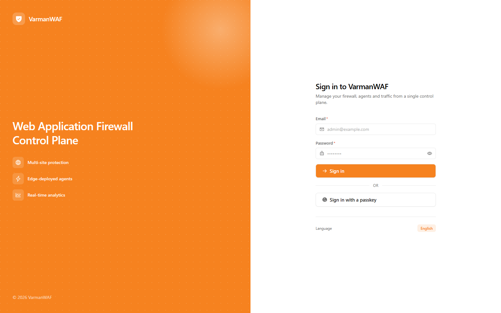
429 និងតម្រូវឱ្យរង់ចាំបន្តិច។ នេះជាមុខងារការពារធម្មតា។២.៣ ជំហានដំបូងបន្ទាប់ពីចូល
- បង្កើតគេហទំព័រ (Site) — ទៅ Sites → Add site បំពេញឈ្មោះ និងដែន (domain)។
- កំណត់ Origin — បញ្ចូលអាសយដ្ឋានម៉ាស៊ីនមេពិតរបស់អ្នក (ឧ.
http://10.0.0.5:8080)។ - ពិនិត្យសុវត្ថិភាព — ទៅ Protection ដើម្បីមើលថា Engine ដំណើរការលើរបៀបណា (Varman / Legacy / Shadow)។
- ភ្ជាប់ចរាចរណ៍ — បង្វែរ DNS នៃដែនរបស់អ្នកមកកាន់ម៉ាស៊ីនដែលដំណើរការ VarmanWAF។
- តាមដានលទ្ធផល — ទៅ Logs និង Dashboard ដើម្បីមើលចរាចរណ៍ និងការទប់ស្កាត់។
ជំពូកទី ៣ — ផ្ទាំងគ្រប់គ្រង (Dashboard)
៣.១ ទិដ្ឋភាពទូទៅ
Dashboard គឺជាផ្ទាំងសង្ខេបដំបូងដែលអ្នកឃើញបន្ទាប់ពីចូល។ វាបង្ហាញ៖
- ស្ថានភាពបណ្តាញ (Fleet) — ភ្នាក់ងារ (agent) ប៉ុន្មានកំពុងដំណើរការ / បិទ។
- សង្ខេបចរាចរណ៍ — ចំនួនសំណើ ការទប់ស្កាត់ និងការតាមដានក្នុងរយៈពេលដែលបានជ្រើស។
- ផែនទីពិភពលោក — ប្រភពនៃចរាចរណ៍តាមប្រទេស។
- ក្បួនពិនិត្យគ្របដណ្តប់ (Coverage) — តើគេហទំព័រណាមួយកំពុងត្រូវបានការពារ និងច្បាប់ណាកំពុងសកម្ម។
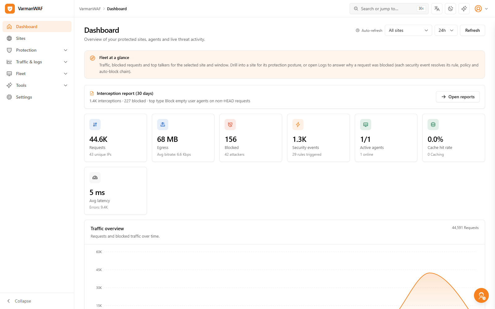
៣.២ របៀបប្រើប្រាស់
- ជ្រើសរយៈពេល (window) នៅជ្រុងខាងលើ ដើម្បីមើលស្ថិតិតាមកាលកំណត់ផ្សេងៗ។
- ចុចលើចំនួនណាមួយ (ឧ. ការទប់ស្កាត់) ដើម្បីលោតទៅកំណត់ហេតុដែលពាក់ព័ន្ធ។
- បើឃើញភ្នាក់ងារណាមួយពណ៌ក្រហម សូមពិនិត្យទំព័រ Agents និងការតភ្ជាប់បណ្តាញ។
ជំពូកទី ៤ — គេហទំព័រ (Sites)
៤.១ បញ្ជីគេហទំព័រ
ទំព័រ Sites បង្ហាញគេហទំព័រទាំងអស់ដែលអ្នកកំពុងការពារ។ សម្រាប់គេហទំព័រនីមួយៗ អ្នកនឹងឃើញ៖
- ឈ្មោះ និងដែន (Domains) — ដែនដែលចរាចរណ៍ត្រូវបានបញ្ជូនមកគេហទំព័រនេះ។
- របៀប Engine —
varman(ម៉ាស៊ីនថ្មី កំពុងអនុវត្ត),legacy(ម៉ាស៊ីនចាស់) ឬshadow(ដំណើរការទាំងពីរ ដើម្បីប្រៀបធៀបលទ្ធផល)។ - ស្ថានភាព — សកម្ម ឬផ្អាក។
- ស្ថិតិរហ័ស — ចំនួនសំណើ និងការទប់ស្កាត់ថ្មីៗ។
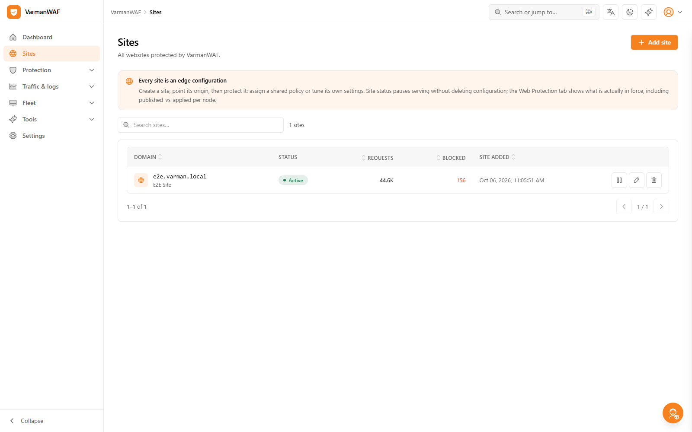
ការបង្កើតគេហទំព័រថ្មី
- ចុចប៊ូតុង Add site (បន្ថែមគេហទំព័រ)។
- បំពេញ ឈ្មោះ (ឧ. «គេហទំព័រក្រុមហ៊ុន») និង ដែន (ឧ.
www.example.com)។ អ្នកអាចបន្ថែមដែនច្រើនបាន។ - ចុច Save។ គេហទំព័រថ្មីនឹងបង្ហាញក្នុងបញ្ជី។
- ចូលទៅក្នុងគេហទំព័រ ដើម្បីកំណត់ Origin (ម៉ាស៊ីនមេពិត) នៅជំពូក ៤.៣។
៤.២ បន្ទប់ធ្វើការរបស់គេហទំព័រ (Site workspace)
នៅពេលចុចលើគេហទំព័រណាមួយ អ្នកនឹងឃើញផ្ទាំងរងជាច្រើននៅខាងឆ្វេង ដែលបែងចែកជា៖
| ផ្ទាំង | អ្វីដែលវាធ្វើ |
|---|---|
| Origin | កំណត់ម៉ាស៊ីនមេពិត និង failover |
| Protection | សុវត្ថិភាព៖ ច្បាប់, CC, ការលៃតម្រូវគោលនយោបាយ (ជំពូក ៥) |
| Rate limiting | ដែនកំណត់អត្រាសំណើ |
| Bot | ការគ្រប់គ្រងបុត |
| Access | IP, ភូមិសាស្ត្រ (Geo), Basic Auth |
| API assets | បញ្ជី API, OpenAPI, ការរៀនសូត្រ |
| Caching | ឃ្លាំងសម្ងាត់ (cache) |
| SSL | វិញ្ញាបនបត្រ និង ACME |
| Traffic | ស្ថិតិចរាចរណ៍ |
| Rules → Rewrite | ការបង្វែរ និង rewrite URL |
| Settings | ការកំណត់គេហទំព័រ |
៤.៣ Origin — ម៉ាស៊ីនមេពិត (Upstream)
Origin គឺជាកន្លែងដែលចរាចរណ៍សុវត្ថិភាពត្រូវបញ្ជូនទៅបន្ទាប់ពីឆ្លងកាត់ការពិនិត្យ។ វាអាចជាម៉ាស៊ីនមេតែមួយ ឬជាក្រុមម៉ាស៊ីនច្រើន (pool) ដែលចែកចាយបន្ទុក។
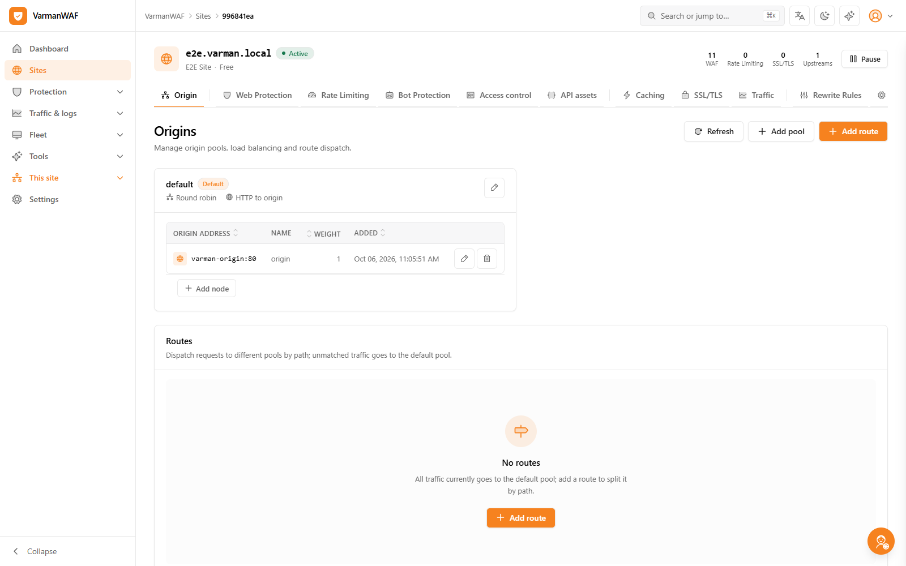
អ្វីដែលអ្នកអាចកំណត់បាន
- អាសយដ្ឋាន — ឧ.
http://10.0.0.5:8080ឬhttps://backend.internal។ - TLS ទៅ Origin — បើម៉ាស៊ីនមេពិតប្រើ HTTPS។
- SNI / Host header — ឈ្មោះដែនដែលត្រូវផ្ញើទៅ origin បើខុសពីដែនអ្នកប្រើ។
- Health check — ផ្លូវសម្រាប់ពិនិត្យសុខភាពម៉ាស៊ីនមេ។
- Failover — អ្វីដែលត្រូវធ្វើបើ pool ធ្លាក់៖ ប្តូរទៅ pool បម្រុង ឬឆ្លើយតបស្តង់ដារ។
ជំហានកំណត់ Origin
- ចូលគេហទំព័រ → ផ្ទាំង Origin។
- ចុច Add upstream បំពេញអាសយដ្ឋានម៉ាស៊ីនមេពិត និងទម្ងន់ (weight) បើមានច្រើន។
- កំណត់ TLS/SNI បើចាំបាច់។
- ចុច Save — ការផ្លាស់ប្តូរនឹងត្រូវបញ្ជូនទៅ Edge ភ្លាមៗ។
៤.៤ ការកំណត់គេហទំព័រ (Site settings)
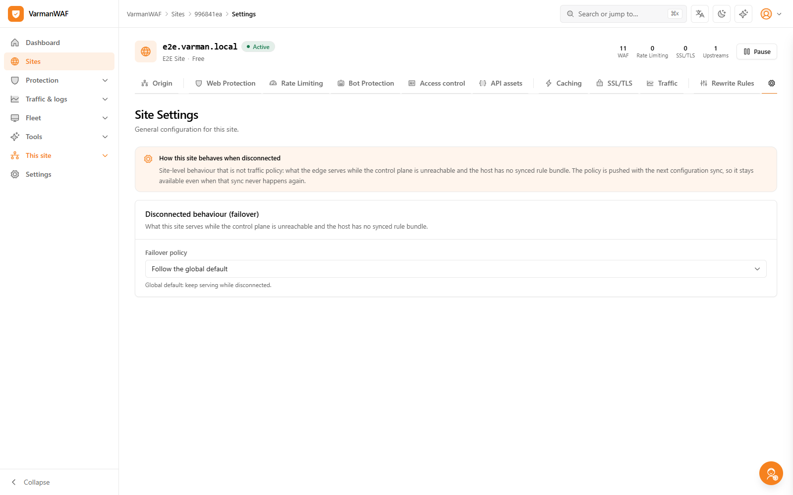
- ឈ្មោះ និងដែន — កែសម្រួលព័ត៌មានមូលដ្ឋាន។
- Engine mode — ជ្រើសរវាង
varman,legacyឬshadow។ ការផ្លាស់ប្តូរត្រូវបានបញ្ជូនទៅ Edge ភ្លាមៗ។ - Advanced mode និង Custom layers — បើក/បិទស្រទាប់សុវត្ថិភាពកម្រិតខ្ពស់។
- Monitor lists — បញ្ជីដែលគ្រាន់តែតាមដាន (មិនទប់ស្កាត់)។
- Log options — ជម្រើសកត់ត្រា។
៤.៥ Caching — ឃ្លាំងសម្ងាត់
ឃ្លាំងសម្ងាត់ជួយឱ្យគេហទំព័រលឿនជាងមុន ដោយរក្សាទុកចម្លើយមួយចំនួននៅ Edge ដើម្បីមិនចាំបាច់ទៅដល់ម៉ាស៊ីនមេពិតរាល់ដង។
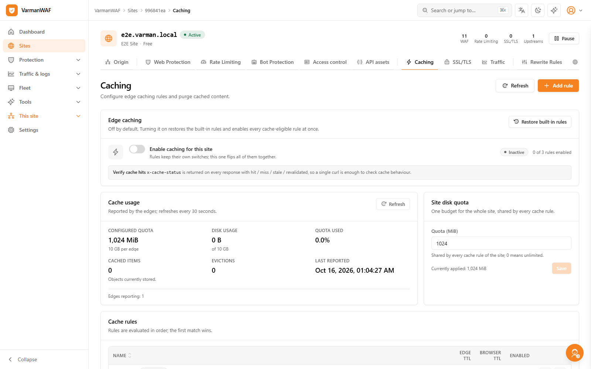
- ចុច Add rule ដើម្បីបង្កើតច្បាប់ cache (តាម path ឬប្រភេទឯកសារ ឧ.
*.css,/images/*)។ - កំណត់ TTL (រយៈពេលរក្សាទុក) និងកូនសោ (key) បើចាំបាច់។
- អាច Purge (សម្អាត) តាម path ឬ tag នៅពេលអ្នកធ្វើបច្ចុប្បន្នភាពខ្លឹមសារ។
៤.៦ SSL — វិញ្ញាបនបត្រ
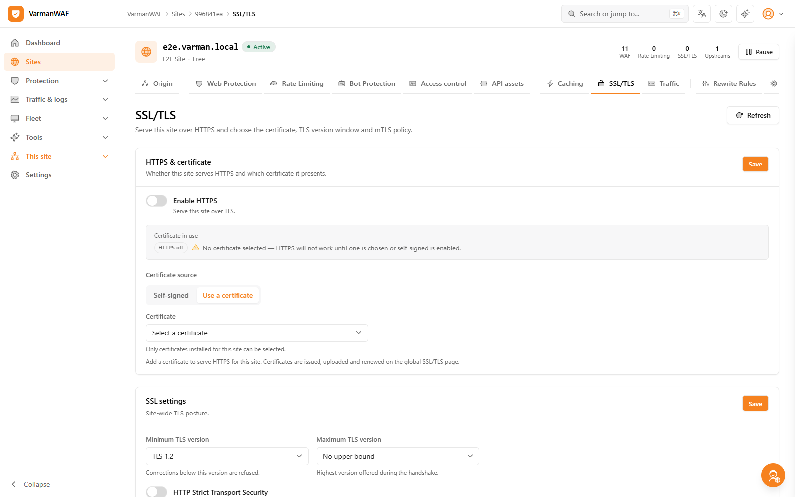
- វិធីទី ១ — ACME ស្វ័យប្រវត្តិ៖ ចុច Issue certificate ជ្រើស Let's Encrypt និងវិធីផ្ទៀងផ្ទាត់ (HTTP-01 ឬ DNS-01)។ ប្រព័ន្ធនឹងចេញ និងបន្តអាយុវិញ្ញាបនបត្រដោយស្វ័យប្រវត្តិ។
- វិធីទី ២ — បញ្ចូលដោយដៃ៖ បិទភ្ជាប់ certificate និង private key (ទម្រង់ PEM)។
- ពិនិត្យ កាលបរិច្ឆេទផុតកំណត់ — ប្រព័ន្ធព្រមានជាមុន។
៤.៧ Traffic — ស្ថិតិចរាចរណ៍
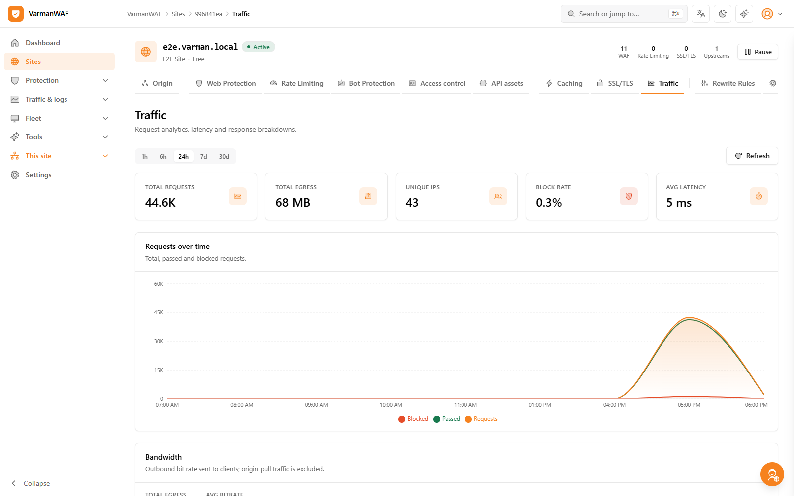
- ចំនួនសំណើ និងប្រភេទលេខកូដ (2xx, 3xx, 4xx, 5xx)។
- បរិមាណទិន្នន័យ (bandwidth) និងផ្លូវដែលគេចូលច្រើនបំផុត (top paths)។
- អត្រា cache hit និងប្រទេសដើមនៃចរាចរណ៍។
ជ្រើសរយៈពេលខាងលើ ដើម្បីប្តូរទិដ្ឋភាព (ម៉ោង, ថ្ងៃ, សប្តាហ៍)។ កាលបរិច្ឆេទប្រើ តំបន់ពេលវេលាដែលបានកំណត់ក្នុង Settings → Display។
៤.៨ Rewrite — ការបង្វែរ និងកែ URL
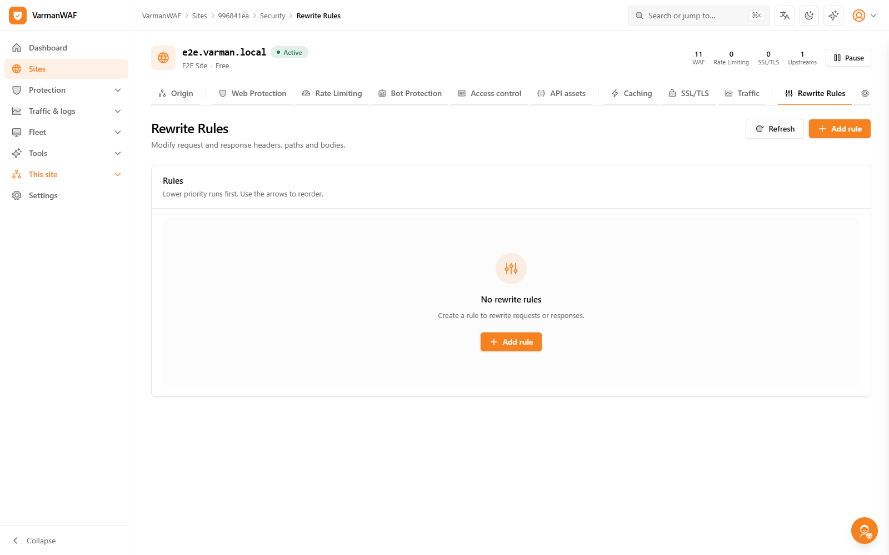
- ចុច Add rule។ ជ្រើសប្រភេទ៖ Route (បញ្ជូនទៅ upstream ផ្សេង / redirect / ឆ្លើយតបស្តង់ដារ) ឬ Rewrite (ជំនួស URL)។
- កំណត់លក្ខខណ្ឌ (host/path) និងសកម្មភាព។
- ប្រើ Preview ដើម្បីសាកល្បងជាមួយ URL គំរូ មុនពេលរក្សាទុក។
- ច្បាប់ត្រូវបានអនុវត្តតាមលំដាប់ពីលើចុះក្រោម។
ជំពូកទី ៥ — ការការពារ (Protection)
៥.១ ទិដ្ឋភាពទូទៅនៃផ្ទាំងការពារ
នេះគឺជាផ្ទាំងសំខាន់បំផុតនៅក្នុងប្រព័ន្ធ។ វាបង្រួមអ្វីៗពាក់ព័ន្ធសុវត្ថិភាពទាំងអស់របស់គេហទំព័រទៅជាផ្ទាំងតែមួយ ដែលមានផ្ទាំងរង ៤៖
| ផ្ទាំងរង | មាតិកា |
|---|---|
| Overview | សង្ខេបស្ថានភាពការពារ និងអ្វីដែលកំពុងសកម្ម |
| Rules | ច្បាប់គ្រប់គ្រង (Managed) និងច្បាប់ផ្ទាល់ខ្លួន (Custom) + កម្មវិធីសាកល្បងច្បាប់ |
| CC | ការប្រឈមមុខ (Challenge) និងរបៀប «កំពុងត្រូវវាយប្រហារ» (Under attack) |
| Policy tuning | ការលៃតម្រូវគោលនយោបាយយ៉ាងលម្អិត (ជំពូក ៥.៤) |
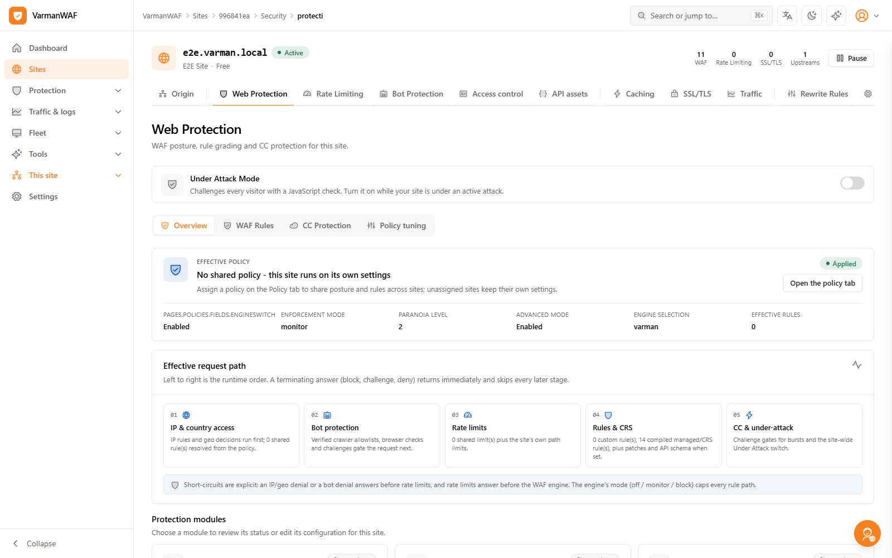
/security/waf ឬ /security/cc នឹងបញ្ជូនអ្នកទៅផ្ទាំងរងដែលត្រូវគ្នាដោយស្វ័យប្រវត្តិ។៥.២ Rules — ច្បាប់សុវត្ថិភាព
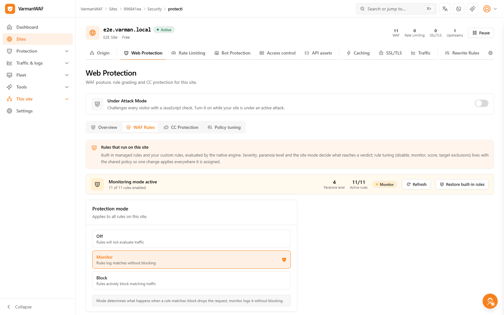
ច្បាប់គ្រប់គ្រង (Managed rules)
ប្រព័ន្ធមានច្បាប់គ្រប់គ្រង ១៤ (VARMAN-1001..1061) ដែលរាយការវាយប្រហារទូទៅ៖ SQL Injection, XSS, RCE (ការប្រតិបត្តិកូដពីចម្ងាយ), path traversal, កម្មវិធីស្កេន, ការស្វែងរកឯកសារសម្ងាត់ (dotfile), វិធីសាស្ត្រ HTTP គ្រោះថ្នាក់, ផ្លូវអ្នកគ្រប់គ្រង, ទំហំ payload ធំលើសកំណត់ ។ល។ ច្បាប់នីមួយៗមាន៖
ព័ត៌មានលម្អិត សូមមើល ជំពូកទី ២៦ — ច្បាប់គ្រប់គ្រងភ្ជាប់មកជាមួយ សម្រាប់តារាងច្បាប់ទាំង ១៤, ពិន្ទុ, ច្រកទ្វារ paranoia និងការលៃតម្រូវ។
- កម្រិតគ្រោះថ្នាក់ (severity) និងពិន្ទុ anomaly។
- របៀប (mode)៖
off(បិទ),monitor(តាមដានតែប៉ុណ្ណោះ),block(ទប់ស្កាត់)។
- រកច្បាប់ដែលចង់កែ តាមការស្វែងរក ឬតាមគ្រួសារ។
- ប្តូរ mode របស់វា។ ការកែតម្រូវនឹងត្រូវកត់ត្រាជា override ហើយមិនបាត់បង់នៅពេលបញ្ជូនច្បាប់ថ្មី។
- ចង់ដឹងថាច្បាប់នេះបាញ់លើសំណើបែបណា? សាកល្បងនៅ Rule tester (ជំហានខាងក្រោម)។
ច្បាប់ផ្ទាល់ខ្លួន (Custom rules)
អ្នកអាចសរសេរច្បាប់ផ្ទាល់ខ្លួនជាភាសាសាមញ្ញ ដូចជា៖
http.request.uri.query contains "union select"
cf.waf.score.sqli ge 30
http.request.uri.path eq "/secret-admin"- ចុច Add rule ក្នុងផ្នែក Custom rules។
- បំពេញ ឈ្មោះ, កន្សោម (expression), និង សកម្មភាព (block ឬ log) ព្រមទាំងពិន្ទុបើចាំបាច់។
- ប្រើ Rule tester ដើម្បីសាកល្បងកន្សោមលើសំណើគំរូ — វានឹងបង្ហាញថាតើលក្ខខណ្ឌណាត្រូវ។
- រក្សាទុក។ ច្បាប់ត្រូវបានបញ្ជូនទៅ Edge ភ្លាមៗ។
៥.៣ CC — ការប្រឈមមុខ និង Under attack
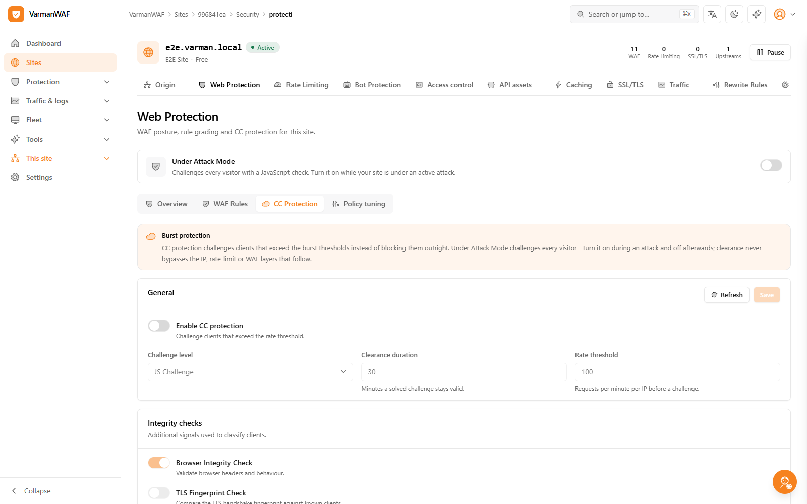
- JS Challenge — បង្ខំឱ្យ browser ដំណើរការកូដ JavaScript ខ្លី ដើម្បីបញ្ជាក់ថាជាមនុស្សពិត។
- Managed Challenge — ប្រព័ន្ធសម្រេចចិត្តខ្លួនឯងថាតើគួរប្រឈមមុខ ឬអនុញ្ញាត។
- Under attack mode — បង្កើនកម្រិតការពារ និងពង្រឹងការត្រួតពិនិត្យ នៅពេលគេហទំព័រកំពុងត្រូវបានវាយប្រហារដោយចរាចរណ៍ច្រើន។
រាល់ការសម្រេចចិត្តត្រូវបានកត់ត្រាជាព្រឹត្តិការណ៍ ជាមួយមូលហេតុ ដែលអាចមើលបាននៅ Logs។
៥.៤ Policy tuning — ការលៃតម្រូវគោលនយោបាយ
នេះជាផ្នែកដែលមានអំណាចបំផុត។ វាមានផ្នែករងជាច្រើននៅផ្នែកខាងស្តាំ (rail) ដូចខាងក្រោម។
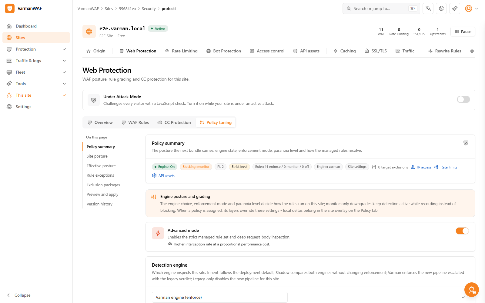
៥.៤.១ សង្ខេបគោលនយោបាយ (Policy summary)
បង្ហាញជា chip សម្រាប់ស្រទាប់ (layer) នីមួយៗ ដើម្បីឱ្យអ្នកឃើញភ្លាមថាអ្វីកំពុងសកម្ម និងអ្វីកំពុងបិទ។
៥.៤.២ ស្ថានភាពគេហទំព័រ (Site posture)
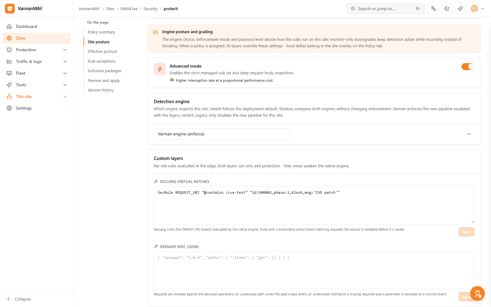
នៅទីនេះអ្នកកំណត់អ្វីដែលគេហទំព័រនេះដំណើរការ៖ engine mode, advanced mode, ស្រទាប់ផ្ទាល់ខ្លួន (custom layers) និង បញ្ជីតាមដាន (monitor lists)។
៥.៤.៣ ស្ថានភាពអនុវត្តជាក់ស្តែង (Effective posture)
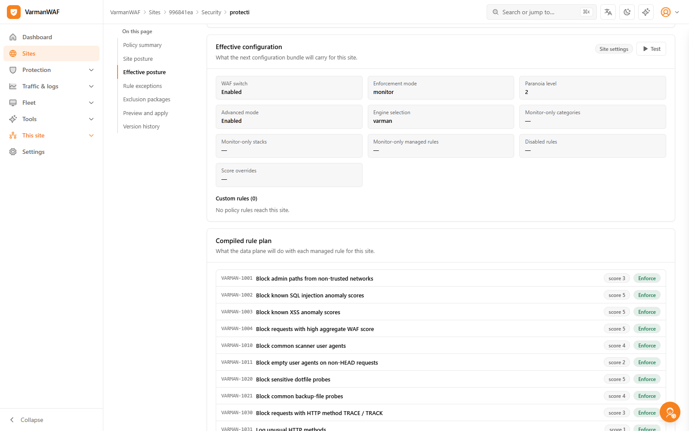
នេះជាផ្នែកសំខាន់សម្រាប់ភាពស្មោះត្រង់៖ វាបង្ហាញ លទ្ធផលចុងក្រោយ បន្ទាប់ពីបញ្ចូលគោលនយោបាយ (policy) ជាមួយការកំណត់ក្នុងគេហទំព័រ។ នៅពេលស្រទាប់ពីរនិយាយផ្ទុយគ្នា ស្រទាប់ដែលតឹងរ៉ឹងជាងឈ្នះ។ ដូច្នេះ «បានបោះផ្សាយ» មិនដូចគ្នានឹង «បានអនុវត្ត» — ហើយផ្ទាំងនេះបង្ហាញភាពខុសគ្នានោះឱ្យអ្នកឃើញផ្ទាល់ភ្នែក។
៥.៤.៤ ការលើកលែងច្បាប់ (Rule exceptions)

អ្នកអាចលៃតម្រូវច្បាប់ជាក់លាក់ដោយមិនបិទវាទាំងស្រុង៖
- Disable — បិទច្បាប់ទាំងស្រុង។
- Monitor only — កត់ត្រាតែប៉ុណ្ណោះ មិនទប់ស្កាត់។
- Score adjustment — បន្ថយ/បង្កើនពិន្ទុ anomaly របស់ច្បាប់។
- Target exclusions — លើកលែងតែផ្នែកជាក់លាក់នៃសំណើ (ឧ. parameter
qក្នុង query string) ដោយអាចកំណត់ទីតាំងតាម path និងឈ្មោះ target ដូចជាquery:q,body:content,cookie:x,header:x។
cf.waf.score.* មិនអាចលើកលែងតាម target បានទេ (ដំណាក់កាលទី ១ នៃ pipeline)។ ផ្ទាំងនឹងប្រាប់អ្នកផ្ទាល់ ជំនួសឱ្យការបង្ហាញថាបានសម្រេច ដោយប្រកាសមិនពិត។៥.៤.៥ កញ្ចប់លើកលែង (Exclusion packages)
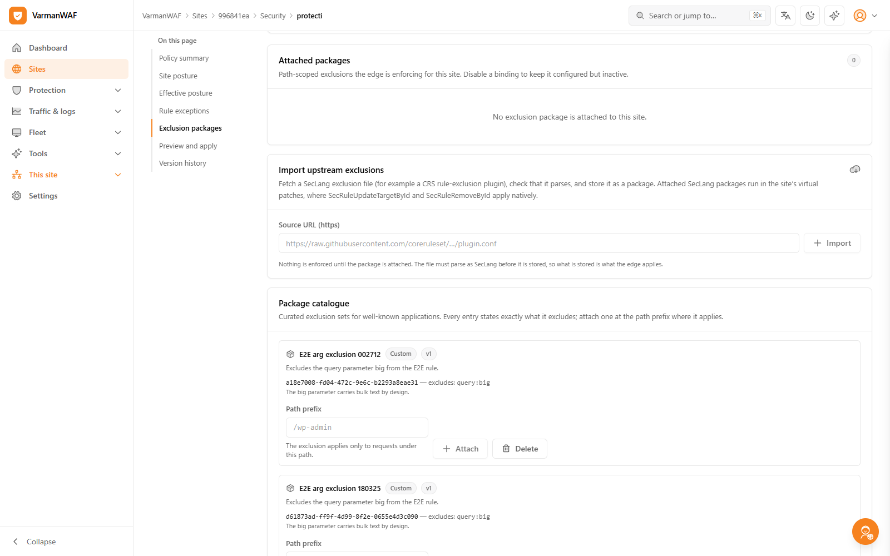
កញ្ចប់លើកលែងមានពីរប្រភេទ៖
- entries — កញ្ចប់សម្រាប់កម្មវិធីពេញនិយម (WordPress, Next.js, Nextcloud WebDAV, កម្មវិធីកែអត្ថបទ rich-text ។ល។)។ ធាតុនីមួយៗភ្ជាប់តាម path និងអាចកំណត់ target ជាក់លាក់ (ឧ.
query:q) សម្រាប់ទាំងច្បាប់គ្រប់គ្រង និងច្បាប់ផ្ទាល់ខ្លួន។ - seclang — នាំចូលឯកសារ SecLang ពីខាងក្រៅ (ឧ. plugin លើកលែងរបស់ OWASP CRS)។ ប្រព័ន្ធនឹងទាញយក ពិនិត្យថាអានបាន រក្សាទុក ជាមួយរបាយការណ៍នៃអ្វីដែលវាមាន (ចំនួនតាមប្រភេទ directive — មិនមែនការប្រឌិត) ហើយចងក្រងចូលក្នុង virtual patches របស់គេហទំព័រ។
- ជ្រើសកញ្ចប់ដែលចង់ប្រើ (ឧ. WordPress)។
- ភ្ជាប់វាទៅ path prefix (ឧ.
/ឬ/blog)។ - ពិនិត្យ របាយការណ៍នាំចូល (ចំនួនធាតុ) មុនពេលអនុវត្ត។
- ចុច Preview and apply ដើម្បីអនុវត្ត។
៥.៤.៦ មើលជាមុន និងអនុវត្ត (Preview and apply)
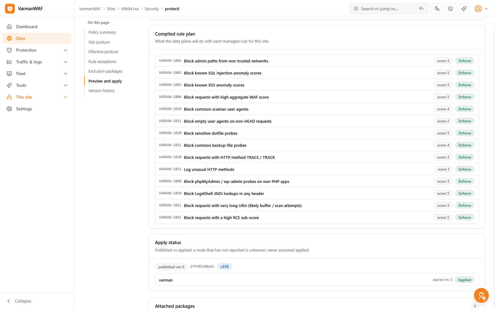
មុនពេលអនុវត្ត ប្រព័ន្ធចងក្រង (compile) កញ្ចប់ថ្មី និងបង្ហាញ ភាពខុសគ្នា (diff) — ដូច្នេះអ្នកដឹងច្បាស់ថាអ្វីនឹងផ្លាស់ប្តូរ។ បន្ទាប់មកចុច Apply ដើម្បីបញ្ជូនទៅ Edge។
៥.៤.៧ ប្រវត្តិកំណែ (Version history)
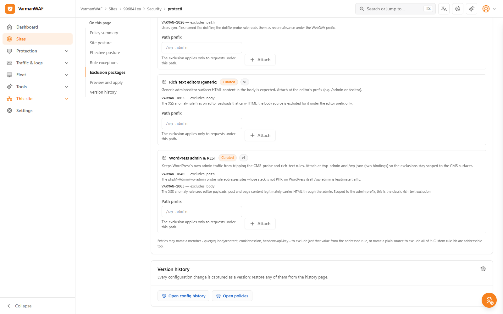
រាល់ការផ្លាស់ប្តូរត្រូវបានចុះកំណែ។ អ្នកអាចមើលកំណែចាស់ និង ត្រឡប់ក្រោយ ទៅកំណែណាមួយបានយ៉ាងងាយ។
៥.៥ Rate limiting — ដែនកំណត់អត្រា
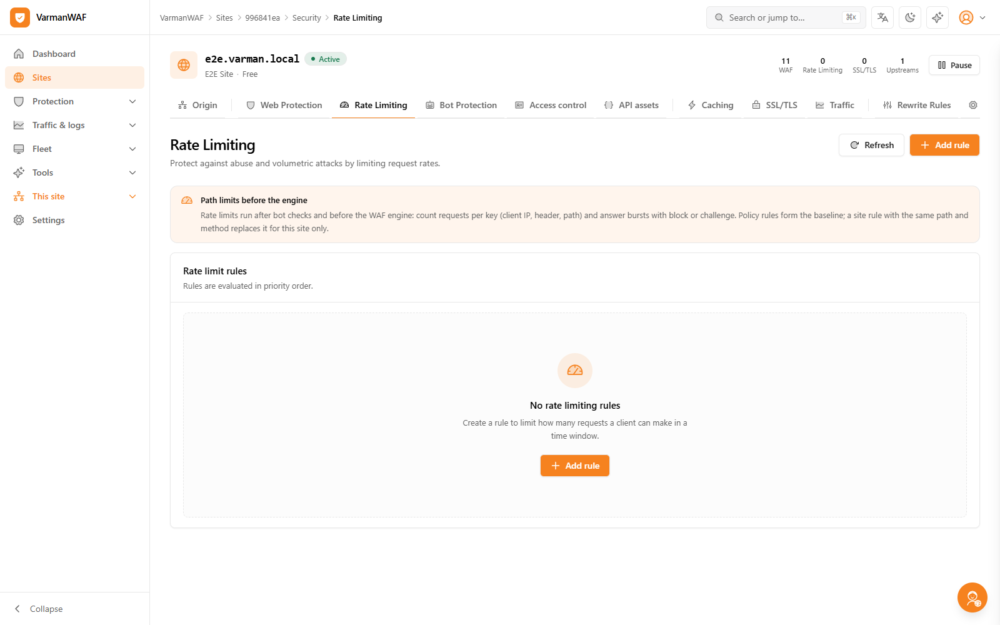
ការពារការប្រើប្រាស់លើសកម្រិត (ឧ. brute force ឬ scraping) ដោយកំណត់ចំនួនសំណើអនុញ្ញាតក្នុងមួយរយៈពេល៖
- ចុច Add limiter។
- ជ្រើស កូនសោ (key)៖ តាម IP, តាម header, តាម cookie ឬតាម path។
- កំណត់ window (ឧ. 60 វិនាទី) និង ចំនួនអនុញ្ញាត (ឧ. 100) ព្រមទាំង burst បើចង់។
- ជ្រើសសកម្មភាព៖ តាមដាន ឬទប់ស្កាត់ (ឆ្លើយតប
429)។ - ភ្ជាប់ limiter ទៅផ្លូវជាក់លាក់ ឬទាំងគេហទំព័រ។
៥.៦ Bot protection — ការគ្រប់គ្រងបុត
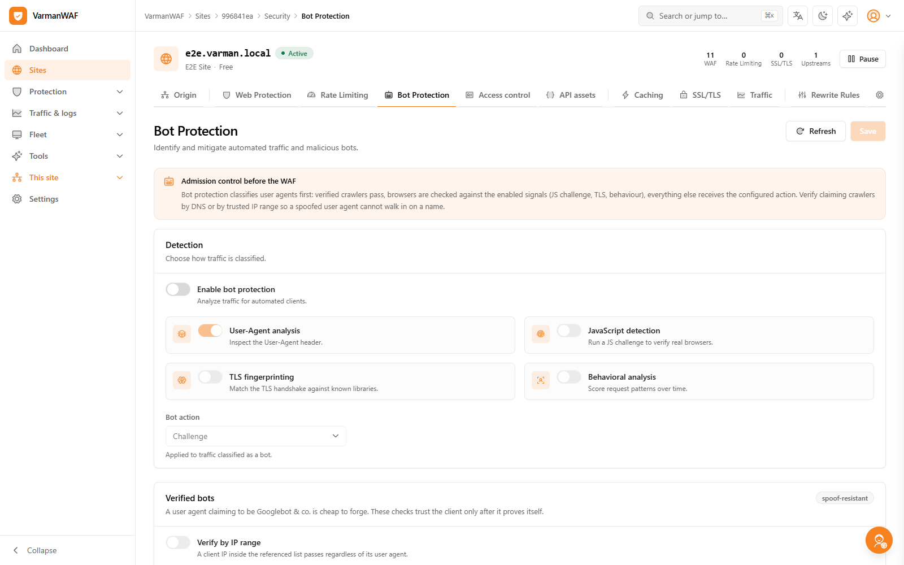
- Bot posture — ជ្រើសរបៀប៖
off,monitor,challengeឬblock។ - Verified bots — បញ្ជីបុតល្បីៗ (ឧ. Googlebot) ដែលត្រូវបានផ្ទៀងផ្ទាត់ដោយ reverse DNS ដើម្បីមិនទប់ស្កាត់ខុស។
- Heuristics — ការវិភាគ user-agent និងសញ្ញាប្រូបាប៊ីលីតេផ្សេងៗ ដែលច្រោះទៅ CC។
ជំពូកទី ៦ — ការគ្រប់គ្រងការចូលប្រើ (Access control)
៦.១ ច្បាប់ IP (IP rules)
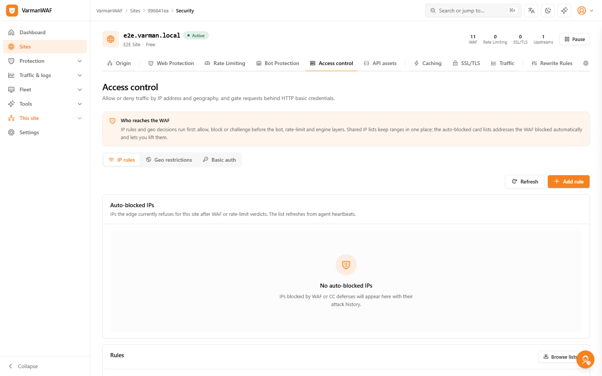
ច្បាប់ IP ត្រូវបានពិនិត្យ មុន pipeline សុវត្ថិភាព។ វាអាចជា៖
- Allow list — អនុញ្ញាតតែ IP/CIDR ក្នុងបញ្ជី។
- Deny list — ទប់ស្កាត់ IP/CIDR ក្នុងបញ្ជី។
- IP Groups — យោងទៅក្រុម IP ដែលបានកំណត់រួច (ជំពូក ១៣) ដើម្បីប្រើឡើងវិញបានច្រើនគេហទំព័រ។
- ចុច Add rule។
- បំពេញ IP ឬ CIDR (ឧ.
203.0.113.0/24) ឬជ្រើស IP Group។ - ជ្រើសសកម្មភាព៖ Allow ឬ Deny។
- រក្សាទុក — ច្បាប់អនុវត្តភ្លាម។
៦.២ ភូមិសាស្ត្រ និង ASN (Geo policy)
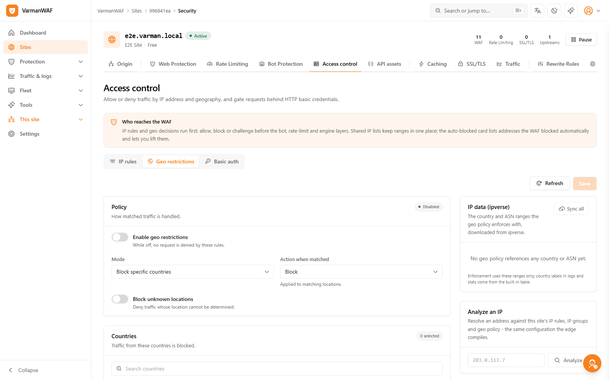
អ្នកអាចអនុញ្ញាត តាមដាន ឬទប់ស្កាត់ចរាចរណ៍តាម ប្រទេស ឬតាម ASN (លេខបណ្តាញរបស់អ្នកផ្តល់សេវា ឧ. Cloudflare = AS13335)។
rir-ip និងជួរ ASN មកពី as-ip-blocks។ ប្រព័ន្ធមិនប្រើប្រភពផ្សេងទេ។- ជ្រើសជួរ (key) ដែលត្រូវការ ឧ. ប្រទេស
USឬ ASNAS13335។ - ចុច Sync ដើម្បីទាញយកទិន្នន័យចុងក្រោយពី ipverse ចូល
ip_datasets។ ការធ្វើសមកាលកម្ម = ការអនុវត្ត — ជួរដែល synced រួចត្រូវបានបញ្ជូនទៅ Edge ភ្លាម។ - ជ្រើសសកម្មភាព៖
off/monitor(តាមដាន) /block(ទប់ស្កាត់)។ - ពិនិត្យផ្នែក missing_keys — បើជួរណាមិនទាន់ synced វានឹងបង្ហាញច្បាស់ថា មិនត្រូវបានអនុវត្ត។ ប្រព័ន្ធមិនបង្ហាញថាសកម្ម បើវាមិនពិតទេ។
៦.៣ ការវិភាគ IP អ្នកប្រើ (Client IP analysis)
ឧបករណ៍នេះជួយឆ្លើយសំណួរថា៖ «បើ IP នេះចូលមក តើ Edge នឹងសម្រេចចិត្តយ៉ាងណា?»។
- បិទភ្ជាប់ IP ដែលចង់វិភាគ។
- ប្រព័ន្ធប្រើ loader ដូចគ្នាបេះបិទ នឹង Edge ដើម្បីពិនិត្យ៖ តើ IP នេះចូលក្នុងជួរប្រទេស/ASN ណា? តើច្បាប់ណានឹងបាញ់? តើវាស្ថិតក្នុងបញ្ជីទប់ស្កាត់ឬទេ?
- លទ្ធផលបង្ហាញច្បាស់ ដើម្បីឱ្យអ្នកជួសជុលគោលនយោបាយបានត្រឹមត្រូវ។
៦.៤ Basic Auth
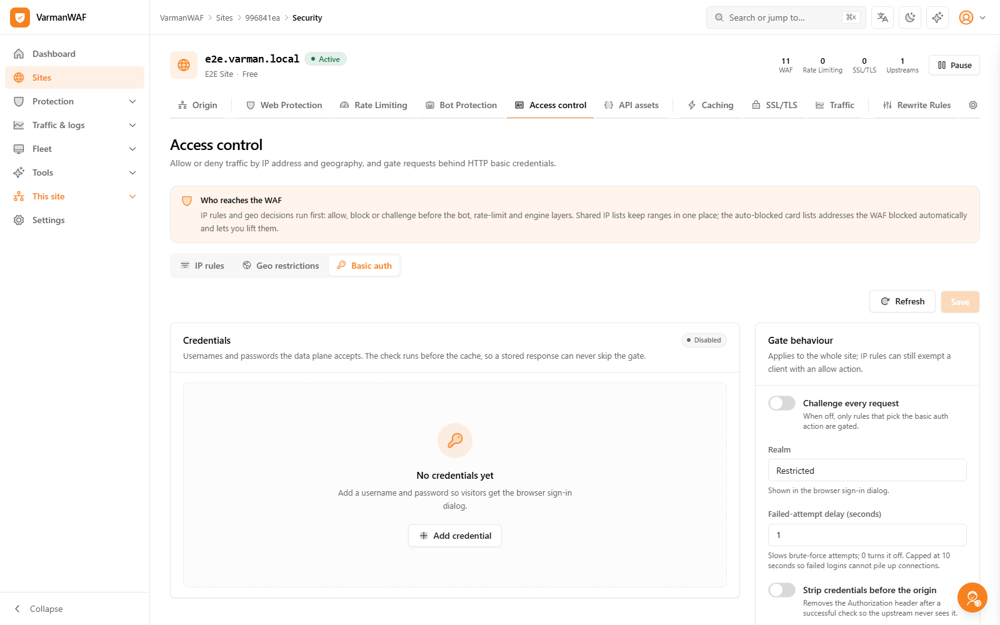
អ្នកអាចការពារផ្លូវជាក់លាក់ (ឧ. /staging ឬ /admin) ដោយ username/password បែប HTTP Basic។
- ចុច Add credential បំពេញឈ្មោះអ្នកប្រើ និងពាក្យសម្ងាត់។
- កំណត់ path ដែលត្រូវការការពារ។
- រក្សាទុក។ អ្នកប្រើដែលគ្មានសិទ្ធិនឹងទទួល
401។
ជំពូកទី ៧ — API assets (ការគ្រប់គ្រង API)
៧.១ តើផ្ទាំងនេះធ្វើអ្វី?
សម្រាប់គេហទំព័រដែលមាន API ផ្ទាំងនេះជួយឱ្យអ្នកដឹងថា API ពិតៗកំពុងត្រូវបានហៅបែបណា និងផ្ទៀងផ្ទាត់សំណើទៅតាម OpenAPI document របស់អ្នក។
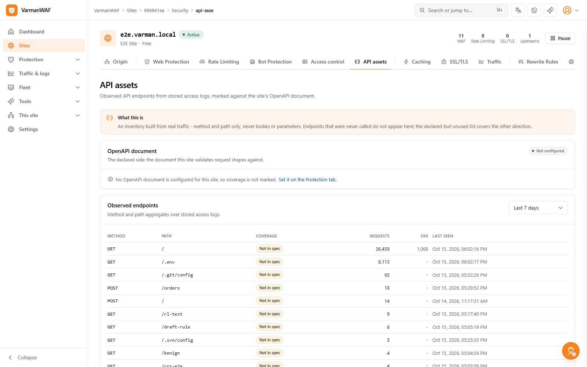
- Observed inventory (បញ្ជីសង្កេត) — ចំណុចចូល (endpoint) ដែលឃើញពីចរាចរណ៍ពិត ដោយបំលែងតម្លៃទៅជាទម្រង់៖
/orders/42→/orders/{id}។ - Declared spec — ឯកសារ OpenAPI ដែលអ្នកផ្ទុកឡើង។ ផ្ទាំងបង្ហាញភាពខុសគ្នារវាងអ្វីដែលបានប្រកាស និងអ្វីដែលពិតជាកើតឡើង។
៧.២ ការរៀនសូត្រដែលមានដែនកំណត់ (Bounded learning)
ប្រព័ន្ធអាច «រៀន» រចនាសម្ព័ន្ធនៃសំណើ និងចម្លើយពីចរាចរណ៍ពិត — ប៉ុន្តែដោយគោរពគោលការណ៍សំខាន់៖
- វារៀន រចនាសម្ព័ន្ធ និងចំនួន (ប្រភេទទិន្នន័យ, ឈ្មោះ key, តើ key ណាចាំបាច់តាមសង្កេត) — មិនរៀនតម្លៃ ទេ។
- ការរៀនធ្វើឡើងតាម ថ្នាក់លេខកូដ (status class) សម្រាប់ចម្លើយ។
- អាចនាំចេញ សេចក្តីព្រាង OpenAPI — ដោយគ្មានតម្លៃ និងគ្មានបញ្ជាក់
required(ព្រោះវាជាការសង្កេត មិនមែនការប្រកាស)។
- ចុច Learn ដើម្បីឱ្យប្រព័ន្ធសង្កេតចរាចរណ៍ក្នុងរយៈពេលខ្លី។
- មើល Learned ដើម្បីពិនិត្យលទ្ធផលដែលបានរៀន។
- ចុច Export draft ដើម្បីទាញយកសេចក្តីព្រាង OpenAPI។
៧.៣ ការគ្រប់គ្រងតាមប្រតិបត្តិការ (Per-operation controls)
រាល់ operation នៅក្នុង spec មានរបៀបបីជម្រើស៖
| របៀប | អត្ថន័យ |
|---|---|
Off | មិនពិនិត្យ operation នេះតាម OpenAPI ទេ |
Observe | ពិនិត្យ និងកត់ត្រាតែប៉ុណ្ណោះ |
Enforce | ពិនិត្យ និងទប់ស្កាត់សំណើដែលមិនត្រឹមត្រូវ |
/orders/42 និង /orders/99 ត្រូវបានបង្រួមជា operation តែមួយ (/orders/{id})។ បើ operation ច្រើនត្រូវគ្នា របៀបដែលតឹងរ៉ឹងជាងគេឈ្នះ។ រាល់ការផ្លាស់ប្តូររបៀបត្រូវបានបញ្ជូនទៅ Edge ភ្លាម។ជំពូកទី ៨ — កំណត់ហេតុ (Logs)
៨.១ ទិដ្ឋភាពទូទៅ
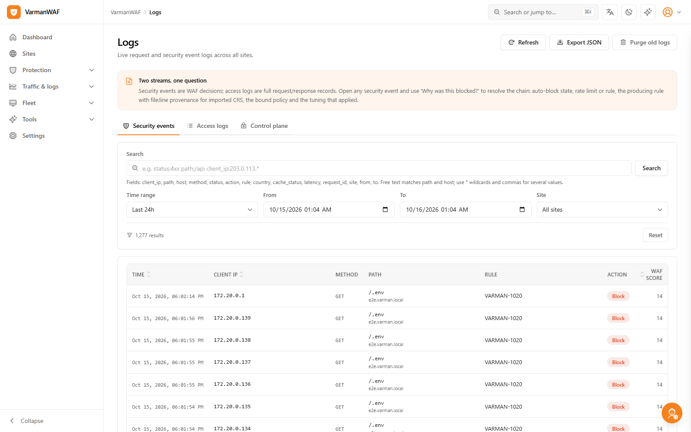
ប្រព័ន្ធមានប្រភេទកំណត់ហេតុពីរ៖
- Security events (ព្រឹត្តិការណ៍សុវត្ថិភាព) — រាល់សំណើដែល WAF បានសម្រេចចិត្ត (block/monitor) ជាមួយសំណើ canonical, ច្បាប់ដែលបានបាញ់ និងលទ្ធផល។
- Access log — រាល់សំណើដែល Edge បានឆ្លើយតប។
៨.២ របៀបស្វែងរក
- ជ្រើសប្រភេទ (Security ឬ Access)។
- ចម្រាញ់តាម៖ គេហទំព័រ, លេខកូដស្ថានភាព, លទ្ធផល (block/monitor), លេខច្បាប់, ផ្លូវ, IP និងរយៈពេល។
- ចុចលើជួរណាមួយដើម្បីមើលលម្អិត រួមទាំង «ហេតុអ្វី?» (why resolver) ដែលពន្យល់មូលហេតុនៃការសម្រេចចិត្ត និង body view បង្ហាញខ្លឹមសារដែលបានពិនិត្យ។
5xx ដែលកើតពីម៉ាស៊ីនមេពិត (pass-through) មិនត្រូវបានកត់ត្រាជា access log ទេ ប៉ុន្តែសំណើដែល WAF ឆ្លើយតបខ្លួនឯង (ឧ. 403) ត្រូវបានកត់ត្រា។រយៈពេលរក្សាទុកត្រូវបានកំណត់នៅ Settings → Log retention។ ការផ្ញើទៅ Elasticsearch គឺជាជម្រើសបន្ថែម (បិទតាមលំនាំដើម)។
ជំពូកទី ៩ — ការជូនដំណឹង (Alerts & Notifications)
៩.១ ទិដ្ឋភាពទូទៅ
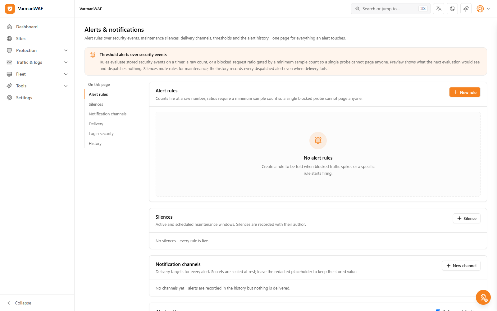
ផ្ទាំងនេះប្រមូលអ្វីៗពាក់ព័ន្ធការជូនដំណឹងទាំងអស់នៅកន្លែងតែមួយ (ធ្លាប់ជាពីរផ្ទាំងដាច់ដោយឡែក)៖
- Alert rules (ច្បាប់ជូនដំណឹង) — លក្ខខណ្ឌ → កម្រិតសំខាន់ (severity)។
- Silences (ការបិទស្ងាត់) — ផ្អាកការជូនដំណឹងមួយរយៈ (ឧ. ពេលដឹងរឿងហើយ)។
- Channels (ឆានែល) — ផ្លូវផ្ញើ៖ អ៊ីមែល (SMTP), Webhook ឬ Telegram។
- Delivery & History — ប្រវត្តិនៃការផ្ញើ និងលទ្ធផល។
- Login security — ការព្យាយាមចូលបរាជ័យ និងប្រវត្តិការចូលប្រើ។
៩.២ ការកំណត់ឆានែល
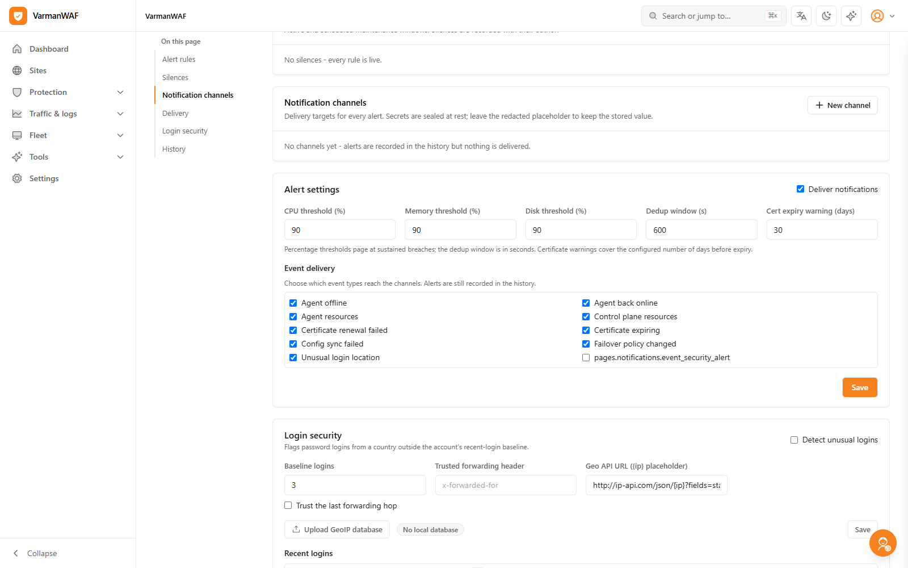
- ចូលផ្នែក Channels រួចចុច Add channel។
- ជ្រើសប្រភេទ៖
- Email — បំពេញ SMTP server, ច្រក, username/password, និងអ្នកទទួល។
- Webhook — បំពេញ URL ដែលនឹងទទួល JSON POST។
- Telegram — បំពេញ Bot token និង Chat ID។
- ចុច Test ដើម្បីផ្ញើសារសាកល្បង។ បើបរាជ័យ ប្រព័ន្ធនឹងប្រាប់ច្បាស់ថាបរាជ័យ — វាមិនបង្ហាញ «ជោគជ័យ» ក្លែងក្លាយទេ។
- ភ្ជាប់ឆានែលទៅច្បាប់ជូនដំណឹងដែលពាក់ព័ន្ធ។
៩.៣ Login security
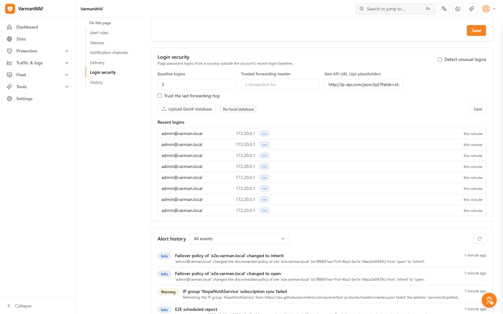
ផ្នែកនេះបង្ហាញការព្យាយាមចូលបរាជ័យ និងប្រវត្តិការចូលប្រើរបស់គណនី។ ប្រើវាដើម្បីរកឃើញការព្យាយាមសាកល្បងពាក្យសម្ងាត់។
ជំពូកទី ១០ — របាយការណ៍ (Reports)
១០.១ ទិដ្ឋភាពទូទៅ
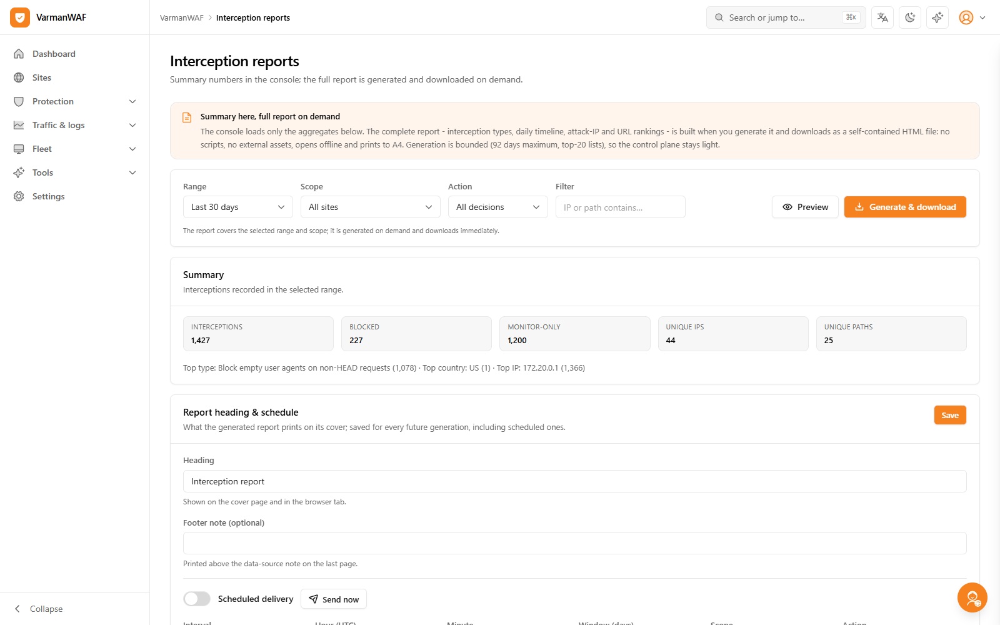
Dashboard ផ្តល់តែសង្ខេប — របាយការណ៍ពេញលេញត្រូវបាន បង្កើត និងទាញយកតាមតម្រូវការ។ របាយការណ៍ជាឯកសារ HTML តែមួយឯកសារ (គ្មាន JavaScript ខាងក្នុង) ដែលអាចផ្ញើ ឬរក្សាទុកបានយ៉ាងងាយ។
១០.២ ការបង្កើតរបាយការណ៍
- ជ្រើស គេហទំព័រ (ឬទាំងអស់) និង រយៈពេល (ចាប់ពីថ្ងៃ ដល់ថ្ងៃ — អតិបរមា ៩២ ថ្ងៃ)។
- ជ្រើសប្រភេទលទ្ធផលដែលចង់បញ្ចូល (block, monitor ។ល។)។
- បើចង់ សរសេរ ចំណងជើង និង footer ផ្ទាល់ខ្លួន (ឧ. ឈ្មោះក្រុមហ៊ុន)។
- ចុច Preview ដើម្បីមើលសង្ខេប រួចចុច Generate ដើម្បីទាញយក។
១០.៣ ការផ្ញើតាមកាលវិភាគ (Schedules)
- ចូលផ្នែក Schedules រួចចុច Add schedule។
- ជ្រើសរយៈពេល៖ ប្រចាំថ្ងៃ / ប្រចាំសប្តាហ៍ / ប្រចាំខែ។
- ជ្រើសអ្នកទទួល (អ៊ីមែល) និងគេហទំព័រ។
- ប្រើ Send now ដើម្បីសាកល្បងផ្ញើភ្លាមៗ។
ជំពូកទី ១១ — គោលនយោបាយរួម (Policies)
១១.១ តើគោលនយោបាយជាអ្វី?
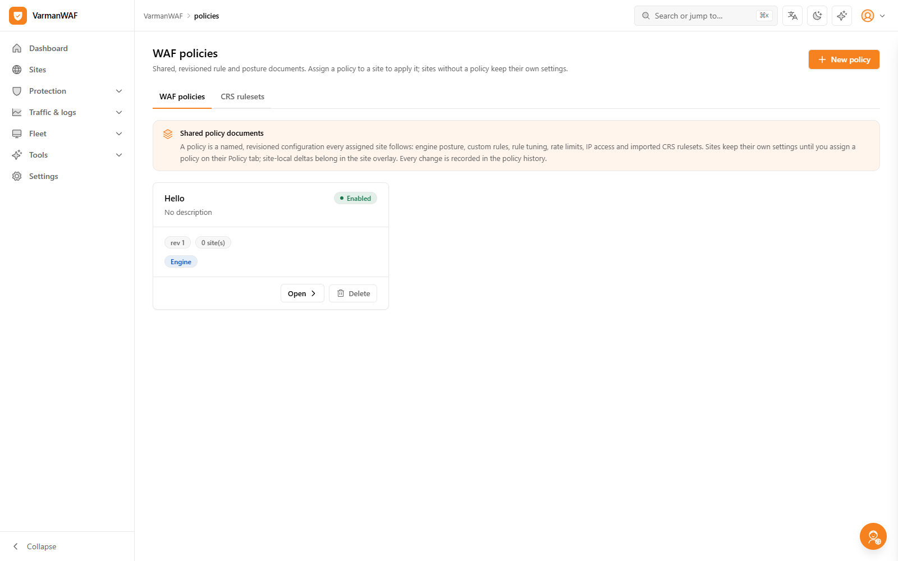
គោលនយោបាយ (Policy) គឺជាឯកសារដែលមាន ស្រទាប់ (layers) ច្រើន ដូចជា៖ engine posture, CRS tuning, ច្បាប់ផ្ទាល់ខ្លួន, ការលើកលែងច្បាប់, virtual patches, API schema, rate limits, IP access, bot posture និង CRS import។ គេហទំព័រអាច តាម (follow) គោលនយោបាយមួយ ដើម្បីកុំកំណត់ដូចគ្នាម្តងហើយម្តងទៀត។
១១.២ ទំព័រលម្អិតគោលនយោបាយ
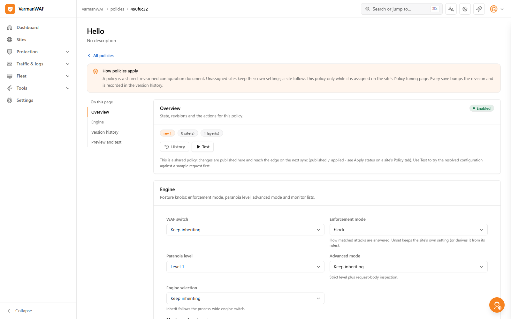
- ចុចលើគោលនយោបាយណាមួយដើម្បីបើកទំព័រលម្អិត (
/policies/:policyId)។ - មើល ស្រទាប់នីមួយៗ — ចុច Add layer ដើម្បីបន្ថែមស្រទាប់ថ្មី (ឧ. rate limits ឬ IP access)។
- មើល ប្រវត្តិ (history) និង preview នៃលទ្ធផលដែលចងក្រងរួច។
- ដើម្បីឱ្យគេហទំព័រប្រើ សូមភ្ជាប់វានៅ Protection → Policy tuning។
ជំពូកទី ១២ — OWASP CRS
១២.១ ទិដ្ឋភាពទូទៅ
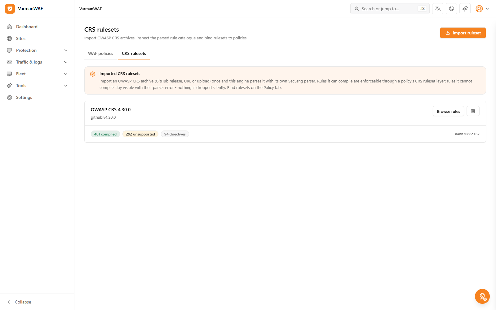
VarmanWAF អាចនាំចូល OWASP Core Rule Set (CRS) ជាច្បាប់បន្ថែម។ កំណែដែលបាននាំចូលបច្ចុប្បន្នគឺ CRS 4.30.0 (ច្បាប់ ៦៩៣)។
ព័ត៌មានលម្អិត សូមមើល ជំពូកទី ២៧ — OWASP CRS និង Paranoia Ceiling សម្រាប់ការនាំចូល, របៀបច្បាប់ទៅដល់ Edge និងអត្ថន័យនៃ paranoia ceiling។
- Categories — មើលច្បាប់តាមប្រភេទ (SQLi, XSS, RCE ។ល។)។
- Paranoia ceiling — កម្រិត «ភាពប្រុងប្រយ័ត្ន» (១–៤)។ កម្រិតខ្ពស់ = ការពារខ្លាំង ប៉ុន្តែអាចបាញ់ខុសច្រើនជាង។ ចាប់ផ្តើមពីកម្រិតទាប រួចបង្កើនបន្តិចម្តងៗ។
- Rule catalogue — បញ្ជីច្បាប់ពេញលេញ និងកន្លែងដែលវាសកម្ម។
ជំពូកទី ១៣ — IP Groups និង Blocked IPs
១៣.១ ក្រុម IP (IP Groups)
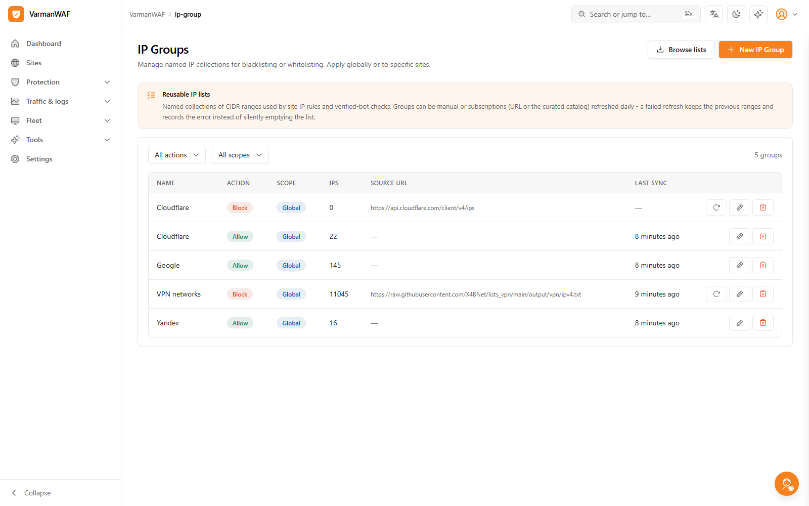
ក្រុម IP គឺជាបណ្តុំ IP/CIDR ដែលមានឈ្មោះ អាចយោងពីច្បាប់ IP និង rate limits នៅគ្រប់គេហទំព័រ។
- ចុច Add group បំពេញឈ្មោះ (ឧ. «ការិយាល័យ») និងបញ្ជី IP/CIDR។
- បន្ថែមធាតុថ្មីៗនៅពេលក្រោយបាន។
- នៅពេលកែក្រុម ប្រព័ន្ធបញ្ជូនកញ្ចប់ថ្មីទៅគ្រប់គេហទំព័រដែលយោងវាភ្លាម។
១៣.២ IP ដែលបានទប់ស្កាត់ (Blocked IPs)
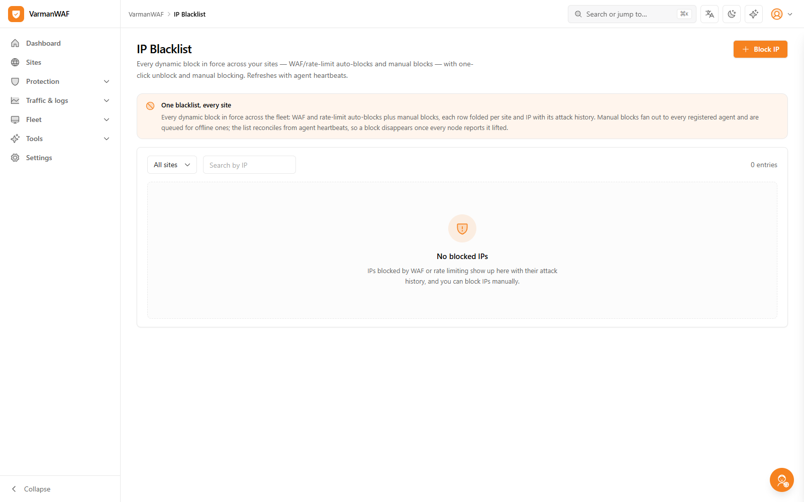
នៅពេល WAF ទប់ស្កាត់សំណើពី IP ណាមួយ Edge នឹង បដិសេធសំណើបន្តបន្ទាប់ពី IP នោះរយៈពេល ៦០០ វិនាទី (១០ នាទី) ដោយមិនចាំបាច់ដំណើរការ engine ម្តងទៀត។
- ប្រភព — ដោយស្វ័យប្រវត្តិ (auto-block) ឬដោយដៃ (manual block)។
- មូលហេតុ និងវិសាលភាព — តាមគេហទំព័រ ឬទាំងប្រព័ន្ធ។
- កាលបរិច្ឆេទផុតកំណត់ និងចំនួនប៉ះ។
- រក IP ក្នុងបញ្ជី។
- ចុច Unblock ដើម្បីដោះវាចេញ (ឧ. ពេលដឹងថាអតិថិជនពិតត្រូវបានបាញ់ខុស)។
- អាច Block IP ដោយដៃបានផងដែរ។
ជំពូកទី ១៤ — បណ្តាញ (Fleet)
១៤.១ ភ្នាក់ងារ (Agents)
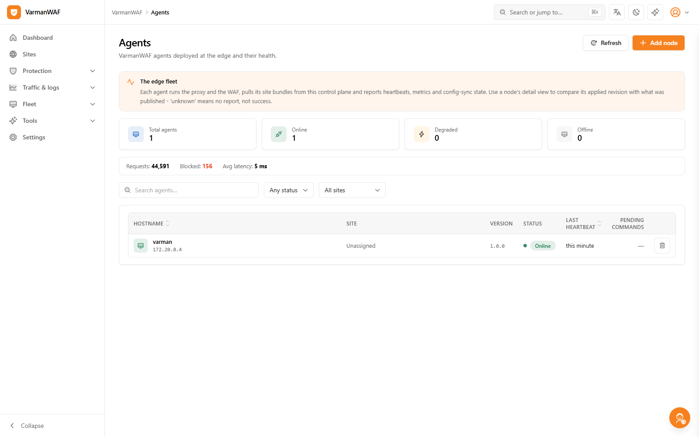
ភ្នាក់ងារ (agent) គឺជាកម្មវិធីដែលដំណើរការនៅម៉ាស៊ីនរបស់អ្នក (ឬ container) ទទួលច្បាប់ពី Control Plane និងអនុវត្ត។
- ស្ថានភាព — online / offline ព្រមទាំងពេលវេលាចុងក្រោយដែលឃើញ (heartbeat)។
- បន្ទុក — ស្ថិតិម៉ាស៊ីន និងកំណែកញ្ចប់ដែលបានទទួល។
- ការចុះឈ្មោះ — អាចបិទ (registration closed) ដើម្បីកុំឱ្យ agent ប្លែកចូលរួម។ អាចភ្ជាប់អត្តសញ្ញាណដោយ mTLS។
១៤.២ ប្រវត្តិការកំណត់ (Config history)
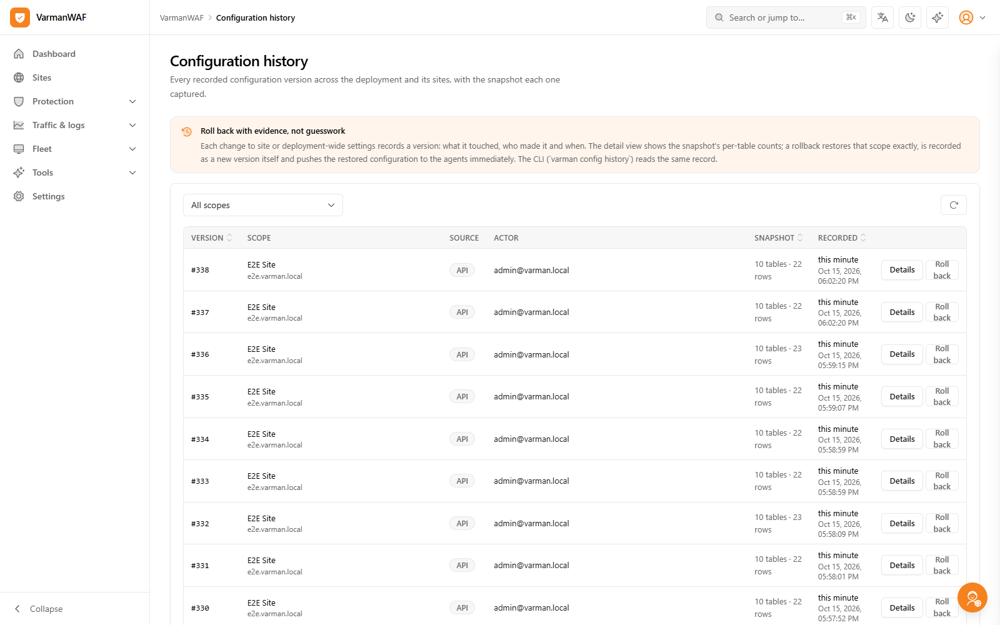
រាល់ការផ្លាស់ប្តូរដែលបង្កើតកញ្ចប់ថ្មីត្រូវបានចុះកំណែ។ អ្នកអាចមើល៖
- កំណែនីមួយៗ ជាមួយអ្នកធ្វើ និងពេលវេលា។
- Diff — អ្វីផ្លាស់ប្តូរពីកំណែមុន។
- Rollback — ត្រឡប់ទៅកំណែចាស់ ដែលនឹងបញ្ជូនកញ្ចប់នោះទៅ Edge វិញ។
១៤.៣ វដ្តជីវិតគេហទំព័រ (Lifecycle)
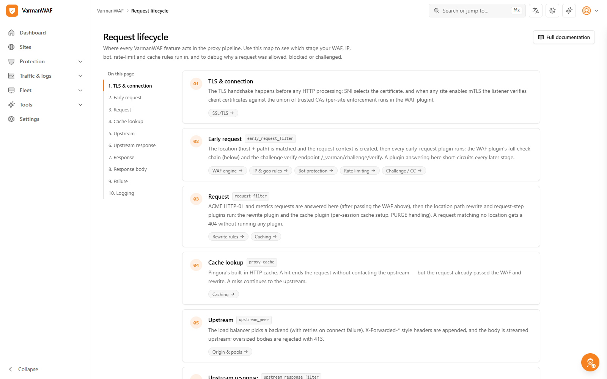
ផ្ទាំងនេះជាបញ្ជីត្រួតពិនិត្យ (checklist) បង្ហាញថាគេហទំព័រនីមួយៗស្ថិតក្នុងដំណាក់ណា៖ បង្កើត → កំណត់រួច → ទទួលចរាចរណ៍ → ការពារពេញលេញ និងអ្វីដែលនៅខ្វះនៅដំណាក់នីមួយៗ។
ជំពូកទី ១៥ — ជំនួយការ AI (Assistant)
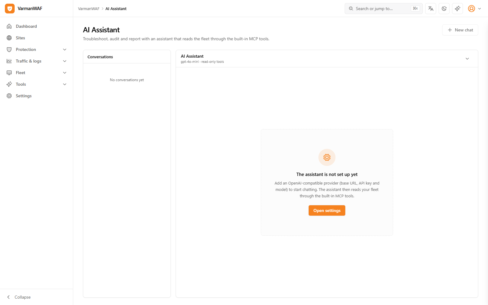
ជំនួយការ AI ជាជម្រើសបន្ថែម សម្រាប់៖
- ពន្យល់ព្រឹត្តិការណ៍សុវត្ថិភាព (ហេតុអ្វីបានជាត្រូវទប់ស្កាត់)។
- ជួយព្រាងច្បាប់ផ្ទាល់ខ្លួន។
ជំពូកទី ១៦ — SSL និងចរាចរណ៍រួម (Global SSL & Traffic)
១៦.១ SSL រួម
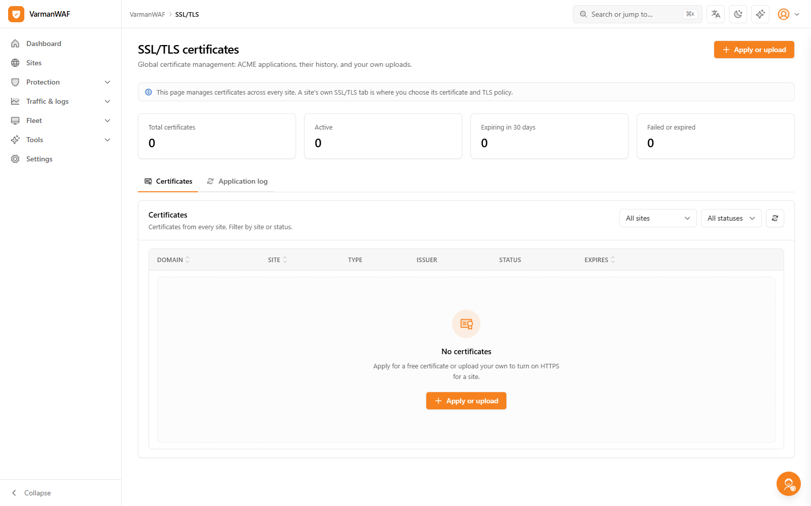
មើលវិញ្ញាបនបត្រទាំងអស់របស់គេហទំព័រក្នុងកន្លែងតែមួយ ព្រមទាំងការព្រមានកាលបរិច្ឆេទផុតកំណត់។ ប្រើវាដើម្បីកុំឱ្យវិញ្ញាបនបត្រណាមួយផុតកំណត់ដោយអចេតនា។
១៦.២ ចរាចរណ៍រួម
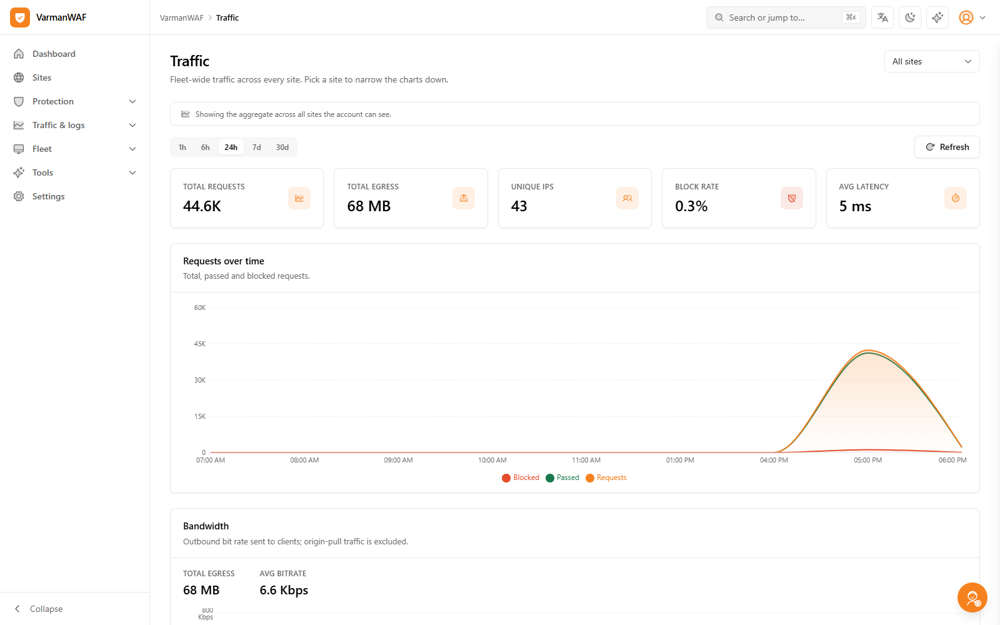
ស្ថិតិចរាចរណ៍រួមគ្នាសម្រាប់គ្រប់គេហទំព័រ៖ ចំនួនសំណើ, លេខកូដ, bandwidth, cache hit និងភូមិសាស្ត្រ — ជួយមើលទិដ្ឋភាពធំនៃប្រព័ន្ធទាំងមូល។
ជំពូកទី ១៧ — ការកំណត់ប្រព័ន្ធ (Settings)
១៧.១ ទិដ្ឋភាពទូទៅ
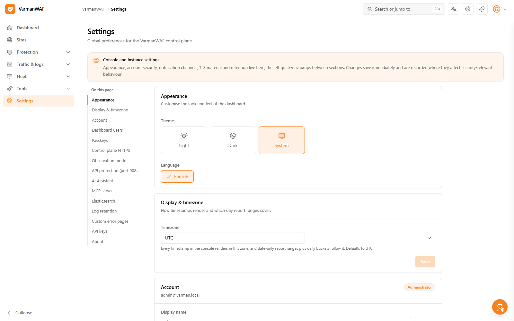
ទំព័រការកំណត់រួមមានផ្នែកជាច្រើន ដែលរាយនៅខាងស្តាំ។ ខាងក្រោមនេះជាការពន្យល់ផ្នែកសំខាន់ៗ។
១៧.២ Appearance (រូបរាង)
- Theme — ភ្លឺ/ងងឹត។
- Brand colour — ពណ៌សម្គាល់របស់អង្គការ។
- ភាសាផ្ទាំងបញ្ជា — បច្ចុប្បន្នគាំទ្រ អង់គ្លេស/ខ្មែរ (តាមការកំណត់)។
១៧.៣ Display & Data timezone (តំបន់ពេលវេលា)
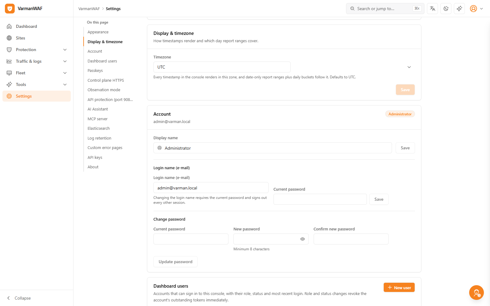
កំណត់តំបន់ពេលវេលា (ឧ. Asia/Phnom_Penh) ដែលប្រើសម្រាប់៖
- ការបង្ហាញពេលវេលានៅគ្រប់ទំព័រ។
- ព្រំដែនកាលបរិច្ឆេទ និងចំណែកប្រចាំថ្ងៃក្នុងរបាយការណ៍។
១៧.៤ Account និង Users (គណនី និងអ្នកប្រើ)
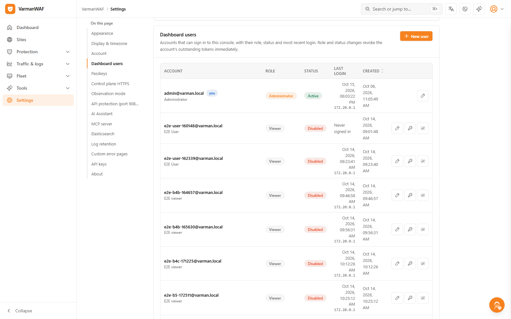
- Account — កែឈ្មោះ, ប្តូរពាក្យសម្ងាត់ (ត្រូវបញ្ជាក់ពាក្យសម្ងាត់បច្ចុប្បន្ន)។
- Users — ចុច Add user បង្កើតអ្នកប្រើថ្មីជាមួយតួនាទី (role)។ អាចបិទ/បើកគណនី ឬបង្ខំឱ្យប្តូរពាក្យសម្ងាត់លើកដំបូង។
- Passkeys — ចុះឈ្មោះ Passkey (WebAuthn) សម្រាប់ចូលដោយគ្មានពាក្យសម្ងាត់។
១៧.៥ API protection (លំនាំដើមសម្រាប់ OpenAPI)
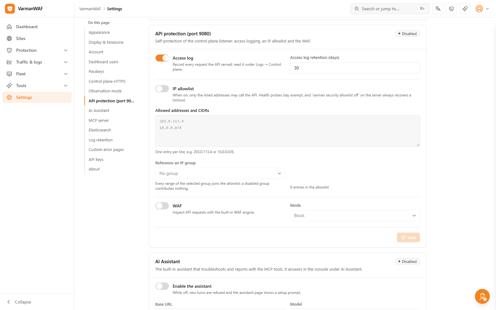
កំណត់របៀបលំនាំដើម (Off / Observe / Enforce) សម្រាប់ស្រទាប់ផ្ទៀងផ្ទាត់ OpenAPI ដែលប្រើនៅពេលគ្មានការកំណត់ជាក់លាក់តាម operation។
១៧.៦ Log retention (រយៈពេលរក្សាទុកកំណត់ហេតុ)
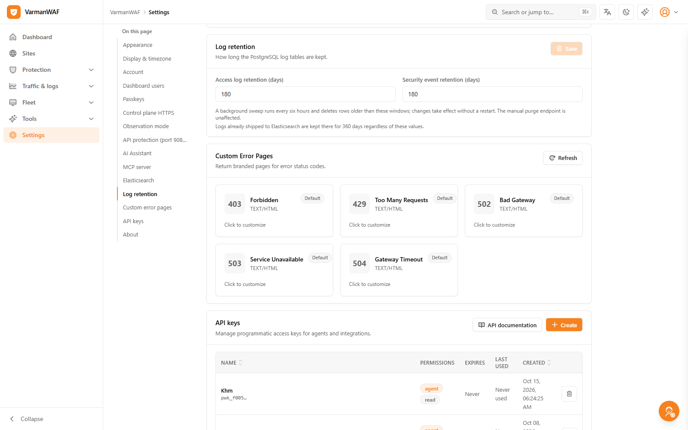
កំណត់រយៈពេលរក្សាទុកព្រឹត្តិការណ៍សុវត្ថិភាព និង access log។ កំណត់តម្លៃសមស្របនឹងទំហំឌីស និងតម្រូវការត្រួតពិនិត្យរបស់អ្នក។
១៧.៧ Custom error pages (ទំព័រកំហុសផ្ទាល់ខ្លួន)
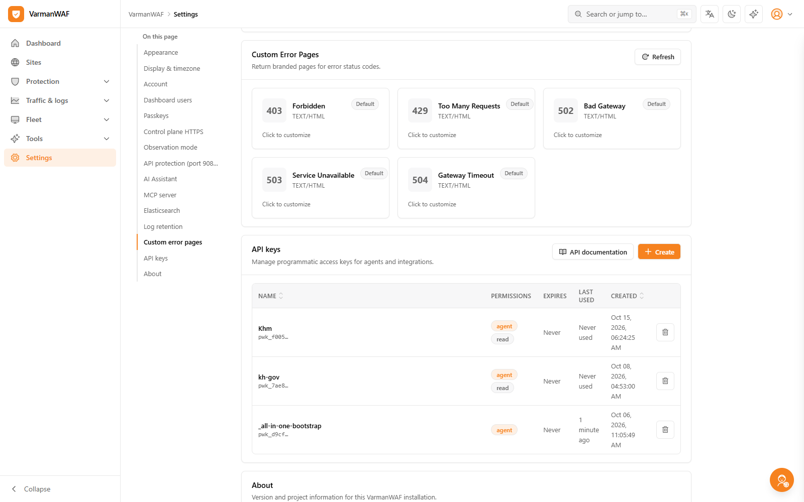
កែទំព័រដែលអ្នកប្រើឃើញនៅពេលត្រូវទប់ស្កាត់ (403) ឬប្រឈមមុខ (challenge) ដើម្បីឱ្យស៊ីនឹងម៉ាករបស់អ្នក។
១៧.៨ API keys (កូនសោ API)
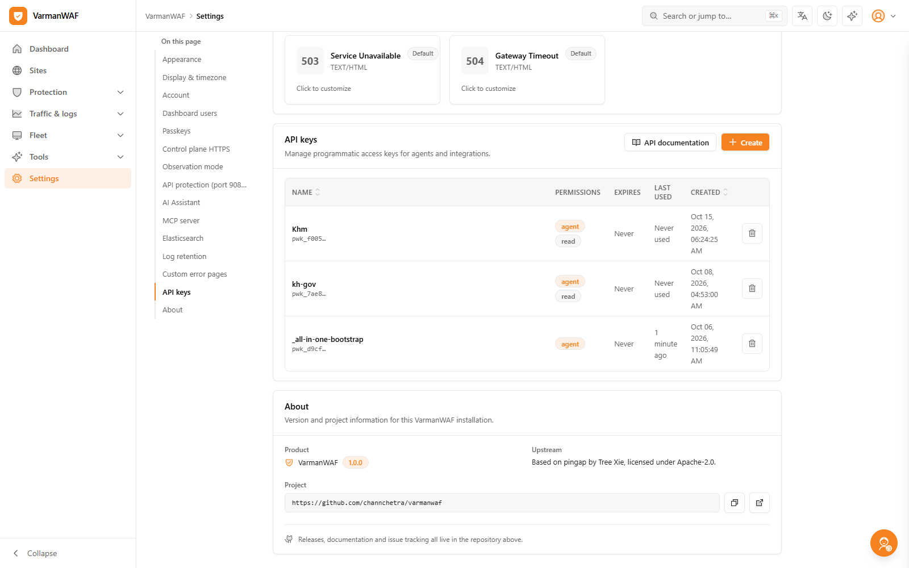
- ចុច Create key ដើម្បីបង្កើតកូនសោថ្មី។
- ចម្លង និងរក្សាទុកវាយ៉ាងសុវត្ថិភាព — វាបង្ហាញតែម្តងគត់។
- ប្រើវាសម្រាប់ការភ្ជាប់ពីប្រព័ន្ធខាងក្រៅ (SIEM, scripts ។ល។)។
ជំពូកទី ១៨ — ម៉ាស៊ីនសុវត្ថិភាព ដំណើរការយ៉ាងដូចម្តេច?
ជំពូកនេះពន្យល់លម្អិតអំពីអ្វីដែលកើតឡើងនៅពេលសំណើមួយមកដល់ Edge — ដើម្បីឱ្យអ្នកយល់ពីមូលហេតុនៃការសម្រេចចិត្ត និងរបៀបលៃតម្រូវប្រកបដោយទំនុកចិត្ត។
១៨.១ លំដាប់នៃដំណាក់កាល
- ទទួលសំណើ — Edge ទទួលសំណើ HTTP/HTTPS និងកំណត់អត្តសញ្ញាណគេហទំព័រតាមដែន (Host)។
- Canonicalization — URL, query, cookies និង headers ត្រូវបានធ្វើឱ្យមានទម្រង់តែមួយ។ ឧទាហរណ៍៖
%2e%2e%2fត្រូវបាន decode,/a/../bត្រូវបានបង្រួម។ នេះជាមូលដ្ឋានដ៏សំខាន់ ព្រោះអ្នកវាយប្រហារចូលចិត្តប្រើការសរសេរខុសៗគ្នា ដើម្បីបញ្ឆោតប្រព័ន្ធ។ - ច្បាប់ IP និងបញ្ជីទប់ស្កាត់ — បើ IP ស្ថិតក្នុងបញ្ជីទប់ស្កាត់ (ឧ. auto-block) វាត្រូវបានបដិសេធភ្លាម មុន engine។
- Signature Lane — ស្កេនលំនាំដោយ Aho-Corasick៖ លំនាំកម្រិតទប់ស្កាត់ (payload ច្បាស់) និងលំនាំកម្រិតកត់ត្រា (ពាក្យសង្ស័យ)។
- ច្បាប់គ្រប់គ្រង — ច្បាប់ ១៣ គ្រួសារបន្ថែមពិន្ទុ anomaly។ បើពិន្ទុលើសកម្រិត → block។
- ច្បាប់ផ្ទាល់ខ្លួន និង SecLang/CRS — កន្សោមរបស់អ្នក និងច្បាប់ CRS ដែលបាននាំចូល។
- API Schema — បើបើក សំណើត្រូវបានផ្ទៀងផ្ទាត់តាម OpenAPI (តាមរបៀបរបស់ operation)។
- Rate limit / Bot / Geo — ដែនកំណត់អត្រា និងគោលនយោបាយបុត/ភូមិសាស្ត្រ។
- ការលើកលែង (Exclusions) — កញ្ចប់ និង target exclusions ត្រូវបានអនុវត្ត ដើម្បីកាត់បន្ថយការបាញ់ខុស។
- សេចក្តីសម្រេច — Allow (បន្តទៅ origin), Monitor (កត់ត្រា បន្តទៅ origin) ឬ Block (ឆ្លើយតបទំព័រកំហុស)។
១៨.២ ការកត់ត្រា និងមូលហេតុ
រាល់ការសម្រេចចិត្តត្រូវបានកត់ត្រាជាមួយព័ត៌មានគ្រប់គ្រាន់ ដើម្បីឆ្លើយសំណួរ «ហេតុអ្វី?»៖ ច្បាប់ណាបាញ់, ពិន្ទុប៉ុន្មាន, ផ្នែកណានៃសំណើ (target) និងការលើកលែងណាត្រូវបានពិចារណា។ ប្រើ Logs → why resolver ដើម្បីមើលវា។
១៨.៣ ដែនកំណត់ដែលចេះគ្រប់គ្រង (Bounded work)
- ចំនួនការរកឃើញក្នុងសំណើមួយមានដែនកំណត់។
- ការត្រួតពិនិត្យ body មានថវិកា (budget) — មិនអានគ្មានទីបញ្ចប់។
- នៅពេលលើសដែនកំណត់ ប្រព័ន្ធ ចុះកម្រិតជារចនាសម្ព័ន្ធ (structured degradation) ជំនួសការបរាជ័យទាំងស្រុង។
១៨.៤ រូបភាពស្ថានភាព (Snapshots) និងភាពស៊ីសង្វាក់
រាល់គេហទំព័រមាន runtime snapshot ដែលជា រូបភាពមិនអាចកែ (immutable) នៅខាងក្រោយ ArcSwap។ ន័យថា៖ នៅពេលអ្នកអនុវត្តការផ្លាស់ប្តូរ សំណើដែលកំពុងដំណើរការនឹងបន្តប្រើ snapshot ចាស់រហូតដល់ចប់ — គ្មានសំណើណាមួយឃើញស្ថានភាព «ពាក់កណ្តាល» ឡើយ។
១៨.៥ របៀប Shadow (ប្រៀបធៀបម៉ាស៊ីន)
នៅពេលអ្នកជ្រើស engine mode = shadow ម៉ាស៊ីនទាំងពីរ (ថ្មី និងចាស់) ដំណើរការជាមួយគ្នាលើសំណើដូចគ្នា ហើយលទ្ធផលត្រូវបានកត់ត្រាជា៖ «យល់ស្រប», «ម៉ាស៊ីនថ្មីតឹងជាង» ឬ «ម៉ាស៊ីនថ្មីធូរជាង»។ នេះជាវិធីសុវត្ថិភាពបំផុតក្នុងការផ្លាស់ប្តូរម៉ាស៊ីន៖ សង្កេតជាមុន រួចទើបប្តូរ។
ជំពូកទី ១៩ — ប្រតិបត្តិការ និងការដោះស្រាយបញ្ហា
១៩.១ ការបម្រុងទុក និងស្តារទិន្នន័យ (Backup / Restore)
ទិន្នន័យទាំងអស់ស្ថិតក្នុង PostgreSQL។ ការបម្រុងទុកសំខាន់បំផុតគឺ database៖
docker exec varman-postgres pg_dump -U varman varman | gzip > varman-backup.sql.gzដើម្បីស្តារ៖ បង្កើត database ទទេម្តងទៀត រួច gunzip -c varman-backup.sql.gz | docker exec -i varman-postgres psql -U varman varman បន្ទាប់មក restart Control Plane។
១៩.២ ការធ្វើបច្ចុប្បន្នភាព (Upgrade)
- បម្រុងទុក database ជាមុន (ខាងលើ)។
- ទាញយក image ថ្មី៖
docker pull sovichetra/varmanwaf:latest។ - ដំណើរការឡើងវិញ៖
docker compose up -d។ - ពិនិត្យសុខភាព៖ បើក
https://<host>:9080/healthzនិងមើលកំណែនៅ Settings → About។
១៩.៣ ការដោះស្រាយបញ្ហាទូទៅ
| រោគសញ្ញា | ដំណោះស្រាយ |
|---|---|
ចូលមិនបាន 429 | ការពារការសាកល្បងពាក្យសម្ងាត់ — រង់ចាំ ១ នាទី រួចព្យាយាមម្តងទៀត |
គេហទំព័រឆ្លើយ 502/503 | ម៉ាស៊ីនមេពិត (origin) មានបញ្ហា — ពិនិត្យនៅ Origin និងសុខភាព upstream |
| Agent បង្ហាញ offline | ពិនិត្យច្រក 9090, ការតភ្ជាប់ gRPC និង registration |
| ច្បាប់ថ្មីមិនបាញ់ | ពិនិត្យ Effective posture — ប្រហែលជា policy មួយឈ្នះ; មើល Logs → why resolver |
| បាញ់ខុស (false positive) | ប្រើ Rule exceptions ឬ Exclusion packages ជំនួសការបិទច្បាប់ទាំងស្រុង |
| ភូមិសាស្ត្រមិនអនុវត្ត | ពិនិត្យ missing_keys — ត្រូវ Sync ជួរនោះពី ipverse ជាមុន |
១៩.៤ សំណួរញឹកញាប់ (FAQ)
តើ Control Plane ធ្លាក់នាំឱ្យគេហទំព័រឈប់ការពារទេ? ទេ។ Edge បន្តប្រើច្បាប់ចុងក្រោយដែលបានទទួល។
តើការរៀនសូត្រ API ផ្ញើតម្លៃទិន្នន័យរបស់អតិថិជនទេ? ទេ។ វារៀនតែរចនាសម្ព័ន្ធ និងចំនួន — មិនរៀនតម្លៃ។
តើខ្ញុំអាចប្តូរម៉ាស៊ីនសុវត្ថិភាពដោយគ្មានហានិភ័យដោយរបៀបណា? ប្រើ shadow mode សង្កេតការប្រៀបធៀបមួយរយៈ រួចទើបប្តូរទៅ varman។
តើរបាយការណ៍បង្ហាញលេខខុសពី Logs ទេ? ពិនិត្យតំបន់ពេលវេលា (Settings → Display) និងរយៈពេលដែលជ្រើស។
ជំពូកទី ២១ — ឃ្លាំងសម្ងាត់ (Caching) ស៊ីជម្រៅ
២១.១ វាដំណើរការយ៉ាងដូចម្តេច?
ឃ្លាំងសម្ងាត់រក្សាទុកចម្លើយនៅ Edge ដើម្បីកុំឱ្យសំណើដដែលៗត្រូវទៅដល់ម៉ាស៊ីនមេពិត។ លំដាប់ដំណើរការគឺ៖
- សំណើចូលមកដល់ Edge → WAF ពិនិត្យ (ច្បាប់, IP, ភូមិសាស្ត្រ) មុនឃ្លាំងសម្ងាត់។ ដូច្នេះចម្លើយដែលបានទប់ស្កាត់ មិនដែលត្រូវបានរក្សាទុក ឬបម្រើពីឃ្លាំងឡើយ។
- បើជា hit (មានក្នុងឃ្លាំង) → Edge ឆ្លើយតបភ្លាម ដោយមិនប៉ះម៉ាស៊ីនមេពិត។
- បើជា miss → Edge ទាញពីម៉ាស៊ីនមេពិត រក្សាទុកតាមច្បាប់ រួចបម្រើចម្លើយនោះ។
២១.២ ច្បាប់ cache មួយមានអ្វីខ្លះ?
| វាល | អត្ថន័យ |
|---|---|
| name | ឈ្មោះច្បាប់ (សម្រាប់អ្នកស្គាល់វា) |
| match_expression | លក្ខខណ្ឌនៃសំណើដែលត្រូវអនុវត្តច្បាប់នេះ (សូមមើលឧទាហរណ៍ខាងក្រោម) |
| edge_ttl_seconds | រយៈពេលរក្សាទុកនៅ Edge (ឧ. 86400 = ១ ថ្ងៃ) |
| browser_ttl_seconds | រយៈពេលដែល browser អាចរក្សាទុកផ្ទាល់ខ្លួន |
| cache_eligible | បើក/បិទការរក្សាទុកសម្រាប់ច្បាប់នេះ |
| respect_origin | គោរពតាម header របស់ម៉ាស៊ីនមេពិត (Cache-Control, Set-Cookie ។ល។) |
| enabled | បើក/បិទច្បាប់ |
២១.៣ តើគួរ cache អ្វី និងមិនគួរ cache អ្វី?
| គួរ cache | មិនគួរ cache |
|---|---|
| ឯកសារឋិតិវន្ត៖ CSS, JavaScript, រូបភាព, ពុម្ពអក្សរ | ទំព័រដែលមានទិន្នន័យផ្ទាល់ខ្លួន (dashboard, profile) |
| ទំព័រសាធារណៈដែលដូចគ្នាសម្រាប់គ្រប់គ្នា (landing page, blog post) | ចម្លើយ API ដែលអាស្រ័យលើ session/cookie |
ចម្លើយ API សាធារណៈ GET ដែលមិនប្រែប្រួលញឹកញាប់ | ផ្លូវអ្នកគ្រប់គ្រង (/admin) និងផ្លូវដែលការពារដោយ Basic Auth |
ឯកសារ /assets/* ដែលមាន hash ក្នុងឈ្មោះឯកសារ | សំណើ POST / PUT / DELETE (មិនដែល cache ទេ) |
២១.៤ ឧទាហរណ៍ជាក់ស្តែង
# ឯកសារឋិតិវន្ត: cache យូរ ដោយគោរព origin
name: "Static assets"
match_expression: http.request.uri.path starts_with "/assets"
edge_ttl_seconds: 86400 # ១ ថ្ងៃនៅ Edge
browser_ttl_seconds: 3600 # ១ ម៉ោងនៅ browser
respect_origin: true
# រូបភាពតាមប្រភេទឯកសារ
name: "Images"
match_expression: http.request.uri.path matches "(?i)\.(png|jpe?g|webp|avif|gif|svg)$"
edge_ttl_seconds: 604800 # ១ សប្តាហ៍
# API សាធារណៈ: TTL ខ្លី + គោរព origin
name: "Public API GET"
match_expression: http.request.method eq "GET" and http.request.uri.path starts_with "/api/public"
edge_ttl_seconds: 60
respect_origin: true២១.៥ ការសម្អាត (Purge) និងការប្តូរឈ្មោះឯកសារ (Cache busting)
- Purge — សម្អាតចម្លើយដែលរក្សាទុកតាម path ឬ tag នៅពេលអ្នកបានធ្វើបច្ចុប្បន្នភាពខ្លឹមសារ។ ប្រើវាឱ្យបានតិចតួច ព្រោះវាធ្វើឱ្យចរាចរណ៍ទៅដល់ម៉ាស៊ីនមេពិតភ្លាមៗ។
- Cache busting (វិធីដែលល្អបំផុត) — នៅពេលអ្នកបញ្ចេញកំណែថ្មីនៃឯកសារ សូមប្តូរឈ្មោះឯកសារ (ឧ.
app.a1b2c3.js)។ ដូច្នេះអ្នកប្រើទទួលបានកំណែថ្មីភ្លាម ដោយមិនចាំបាច់ purge ។ - Quota — គេហទំព័រមានកំណត់រយៈទំហំឃ្លាំង (ឧ. 1024 MB) ដែលចែករំលែករវាងដែនទាំងអស់របស់គេហទំព័រ។ ពេលពេញ ចម្លើយចាស់ៗត្រូវបានជំនួសដោយស្វ័យប្រវត្តិ។
ជំពូកទី ២២ — SecLang ជាអ្វី និងប្រើវាយ៉ាងដូចម្តេច?
២២.១ SecLang ជាអ្វី?
SecLang គឺជាភាសាសរសេរច្បាប់របស់ ModSecurity — ភាសាដែលគម្រោង OWASP CRS (Core Rule Set) ប្រើសរសេរច្បាប់ការពាររបស់វា។ VarmanWAF មានម៉ាស៊ីនអនុវត្ត SecLang ផ្ទាល់ខ្លួន (សរសេរក្នុង Rust) ដែលអាចអាន និងអនុវត្តច្បាប់ SecLang បានដោយផ្ទាល់ — មិនចាំបាច់ដំឡើង ModSecurity ទេ។
ក្នុងប្រព័ន្ធរបស់យើង SecLang ប្រើនៅពីរកន្លែង៖
- Virtual patches — ច្បាប់ខ្លីៗដែលអ្នកសរសេរខ្លួនឯង ដើម្បីបិទចន្លោះប្រហោងជាក់លាក់ (ឧ. CVE ថ្មី) ដោយមិនចាំបាច់រង់ចាំកំណែថ្មី។
- ការនាំចូល CRS — ច្បាប់ OWASP CRS 4.30.0 (ច្បាប់ ៦៩៣) ត្រូវបាននាំចូល និងដំណើរការជា virtual patches របស់គេហទំព័រ។
២២.២ រចនាសម្ព័ន្ធច្បាប់ SecLang
SecRule <ទិន្នន័យត្រូវពិនិត្យ> "<ប្រតិបត្តិករ>" "id:<លេខ>,phase:<ដំណាក់កាល>,<សកម្មភាព>,msg:'<សារ>'"- ទិន្នន័យត្រូវពិនិត្យ — ឧ.
REQUEST_URI,ARGS,REQUEST_HEADERS,REQUEST_BODY។ - ប្រតិបត្តិករ — ឧ.
@contains,@rx(regex),@eq,@streq។ - ដំណាក់កាល (phase) —
1= ក្បាលសំណើ,2= ខ្លឹមសារសំណើ,3/4= ចម្លើយ។ - សកម្មភាព —
block,deny,pass,log។ល។
២២.៣ អ្វីដែលអ្នកអាចធ្វើបាន (ជាមួយឧទាហរណ៍)
# ១. បិទចន្លោះប្រហោងថ្មី (virtual patch) — ទប់ស្កាត់ផ្លូវគ្រោះថ្នាក់
SecRule REQUEST_URI "@contains /cve-test" \
"id:900001,phase:1,block,msg:'CVE patch'"
# ២. លើកលែង parameter មួយចេញពីច្បាប់ CRS 942100 (ការពារ false positive)
SecRuleUpdateTargetById 942100 "!ARGS:comment"
# ៣. បិទច្បាប់ដែលមិនសមស្របនឹងកម្មវិធីរបស់អ្នក
SecRuleRemoveById 920350
# ៤. លើកលែង target ក្នុងច្បាប់មួយ (តាម ctl)
SecRule REQUEST_URI "@streq /api/notes" \
"id:900010,phase:2,pass,nolog,ctl:ruleRemoveTargetById=942100;ARGS:content"២២.៤ ការនាំចូលច្បាប់ SecLang ពីខាងក្រៅ (Import)
នៅ Protection → Policy tuning → Exclusion packages អ្នកអាចបន្ថែមកញ្ចប់ប្រភេទ seclang ដោយផ្តល់ URL នៃឯកសារ SecLang (ឧ. plugin លើកលែងរបស់ CRS)។ ប្រព័ន្ធនឹង៖
- ទាញយកឯកសារ។
- ពិនិត្យថាវាអានបានជា SecLang (បើមិនអានបាន វាបដិសេធ — មិនបង្កើតអ្វីទាំងស្រុង)។
- រក្សាទុក ជាមួយរបាយការណ៍នៃអ្វីដែលវាមាន (ចំនួន directive តាមប្រភេទ — មិនមែនការប្រឌិត)។
- នៅពេលភ្ជាប់ វាត្រូវបានចងក្រងចូលក្នុង virtual patches របស់គេហទំព័រ។
២២.៥ ដែនកំណត់ដែលគួរដឹង
- កញ្ចប់ seclang ធ្វើសកម្មភាព តាម root prefix និង ទាំងគេហទំព័រ (មិនមែនតាម path នីមួយៗទេ)។
- ច្បាប់គ្រប់គ្រងដែលប្រើពិន្ទុ
cf.waf.score.*មិនអាចលើកលែងតាម target បានទេ (ដំណាក់កាលទី ១)។ - កម្រិតភាពស៊ីគ្នាជាមួយ CRS ត្រូវបានកត់ត្រានៅ
docs/compatibility.md។
ជំពូកទី ២៣ — កន្សោម និង Regex (Expressions) ស៊ីជម្រៅ
២៣.១ កន្សោមប្រើនៅទីណា?
ភាសាកន្សោម (expression) តែមួយត្រូវបានប្រើនៅគ្រប់កន្លែង៖
- ច្បាប់ផ្ទាល់ខ្លួន (Custom rules) — លក្ខខណ្ឌនៃការទប់ស្កាត់។
- ច្បាប់ cache — សំណើណាដែលត្រូវរក្សាទុក។
- ដែនកំណត់អត្រា — សំណើណាដែលរាប់បញ្ចូល។
- ច្បាប់បង្វែរ (rewrite) — លក្ខខណ្ឌនៃការកែ URL។
២៣.២ រចនាសម្ព័ន្ធ៖ វាល + ប្រតិបត្តិករ + តម្លៃ
| ប្រតិបត្តិករ | អត្ថន័យ | ឧទាហរណ៍ |
|---|---|---|
eq | ស្មើគ្នា | http.request.method eq "POST" |
contains | មានអក្សរនេះ | http.request.uri.query contains "union select" |
starts_with / ends_with | ចាប់ផ្តើម / បញ្ចប់ដោយ | http.request.uri.path starts_with "/api" |
matches | regex | http.request.uri.path matches "(?i)/wp-login" |
ge / le / gt / lt | ធំជាង/តូចជាង (លេខ) | cf.waf.score.sqli ge 40 |
and / or / not | បញ្ចូលលក្ខខណ្ឌ | http.request.method eq "POST" and http.request.uri.path starts_with "/api" |
វាលសំខាន់ៗ៖ http.request.uri.path, http.request.uri.query, http.request.method, http.request.headers.<ឈ្មោះ>, http.request.cookies.<ឈ្មោះ>, ip.src, geo.country, cf.waf.score.sqli / .xss / .rce (ពិន្ទុ anomaly)។
២៣.៣ Regex នៅក្នុង VarmanWAF
- ប្រើ Rust regex (ស្ទើរដូច RE2) — លឿន និងមិនអាចធ្វើការវាយប្រហារ DoS បានទេ (គ្មាន backtracking ធ្ងន់)។
- មិនគាំទ្រ backreference (
\1) ទេ — បើត្រូវការវា សូមប្រើលក្ខខណ្ឌពីរជំនួស។ (?i)= មិនប្រកាន់អក្សរធំ-តូច។^/$= ចាប់ផ្តើម/បញ្ចប់។- សម្រាប់ល្បឿន៖ ប្រើ
containsជំនួស regex នៅពេលអាច និងចាប់ផ្តើម regex ដោយអក្សរជាក់លាក់ (ឧ.^/admin)។
២៣.៤ ឧទាហរណ៍ពេញលេញ
# ទប់ស្កាត់កម្មវិធីស្កេនដែលស្វែងរកផ្លូវគ្រប់គ្រង
http.request.uri.path matches "(?i)/(wp-login|phpmyadmin|\.git|\.env)"
# ទប់ស្កាត់ SQL Injection ដោយផ្ទាល់
http.request.uri.query contains "union select"
# ទប់ស្កាត់តាមពិន្ទុ anomaly របស់ម៉ាស៊ីន
cf.waf.score.sqli ge 40
# ការពារ API៖ តែ POST ទៅ /api ប៉ុណ្ណោះ
http.request.method eq "POST" and http.request.uri.path starts_with "/api"
# លើកលែង parameter "comment" ពីច្បាប់ XSS (ការពារ false positive)
target exclusion: rule VARMAN-1042, target query:comment, path /blog/*២៣.៥ ការសាកល្បង និងការពិនិត្យ
- ប្រើ Rule tester (Protection → Rules) ដើម្បីសាកល្បងកន្សោមលើសំណើគំរូ — វាបង្ហាញថាតើលក្ខខណ្ឌណាត្រូវ។
- បន្ទាប់ពីដាក់ឱ្យដំណើរការ សូមពិនិត្យ Logs → why resolver ដើម្បីដឹងថាហេតុអ្វីសំណើពិតត្រូវទប់ស្កាត់ ឬអនុញ្ញាត។
- តែងតែសាកល្បងជាមួយសំណើ សុវត្ថិភាព ផង (ឧ. ទំព័រធម្មតា) ដើម្បីបញ្ជាក់ថាគ្មានការបាញ់ខុស។
ជំពូកទី ២៤ — ដែនកំណត់អត្រា និងភូមិសាស្ត្រ ស៊ីជម្រៅ
២៤.១ ដែនកំណត់អត្រា (Rate limiting)
ដែនកំណត់អត្រាការពារការប្រើប្រាស់លើសកម្រិត៖ brute force, scraping, API abuse ។ល។
| វាល | អត្ថន័យ |
|---|---|
| characteristics (កូនសោ) | រាប់តាមអ្វី៖ ip, asn, country, header, cookie, path (អាចផ្សំច្រើន) |
| period_seconds | រយៈពេលវាស់ (ឧ. 60 វិនាទី) |
| threshold | ចំនួនសំណើអនុញ្ញាតក្នុងរយៈពេលនោះ |
| action | monitor ឬ block (ឆ្លើយតប 429) |
| mitigation_timeout_seconds | រយៈពេលបន្តទប់ស្កាត់បន្ទាប់ពីលើសកំណត់ |
# ការពារ Login ពីការសាកល្បងពាក្យសម្ងាត់
name: "Login brute force"
characteristics: ip
period_seconds: 60
threshold: 10
action: block
# API ប្រចាំអតិថិជន (តាម header API key)
name: "API per key"
characteristics: header # ឈ្មោះ header កំណត់ក្នុងកន្សោម
period_seconds: 60
threshold: 1000
action: block២៤.២ ភូមិសាស្ត្រ និង ASN
- mode —
block_list(ទប់ស្កាត់ប្រទេសក្នុងបញ្ជី) ឬallow_list(អនុញ្ញាតតែប្រទេសក្នុងបញ្ជី)។ - countries — បញ្ជីលេខកូដប្រទេស (ឧ.
US,KH)។ - blocked_asns — បញ្ជី ASN (ឧ.
AS13335= Cloudflare)។ - block_unknown — បើបើក សំណើដែល IP មិនស្គាល់ប្រទេសក៏ត្រូវទប់ស្កាត់ដែរ (ប្រុងប្រយ័ត្ន!)។
- action —
monitor(តាមដាន) ឬblock(ទប់ស្កាត់)។
# ឧទាហរណ៍៖ អនុញ្ញាតតែប្រទេសក្នុងតំបន់ និងតាមដាន Cloudflare
mode: allow_list
countries: [KH, TH, VN, LA]
action: block
blocked_asns: [AS13335] # តាមដានដោយឡែក (monitor)missing_keys) — ប្រព័ន្ធមិនបង្ហាញថាសកម្ម បើវាមិនពិតទេ។ជំពូកទី ២៥ — ទំព័របណ្តាញ (Routing topology)
២៥.១ ទំព័រនេះជាអ្វី?
ទំព័រ Routing topology បង្ហាញលំហូរពិតនៃសំណើរបស់គេហទំព័រអ្នក ជាដ្យាក្រាមរស់៖
អ្នកប្រើ → គេហទំព័រ → ការការពារ (WAF) → ស្រទាប់សុវត្ថិភាព → ផ្លូវ (Routes) → ក្រុម origin → គោលដៅ (Targets)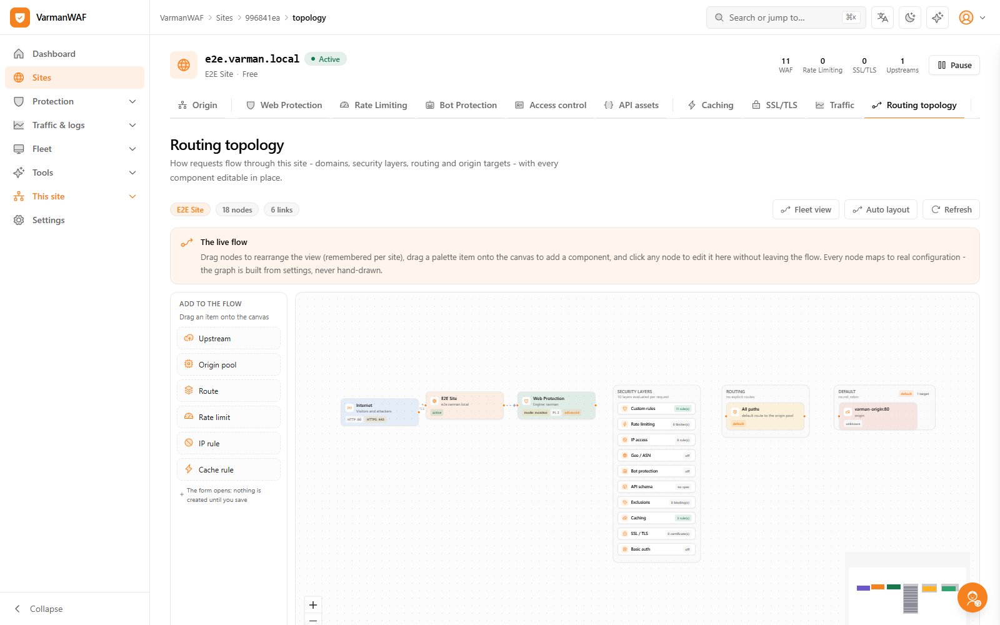
- គ្រប់ខ្សែតភ្ជាប់មានចលនា (animation) — ដើម្បីបង្ហាញទិសដៅលំហូរ។
- ក្រុម (groups) — ស្រទាប់សុវត្ថិភាពទាំង ១០ ស្ថិតក្នុងក្រុមតែមួយ; ក្រុម origin នីមួយៗផ្ទុកគោលដៅរបស់វា។
- Placeholder — បើផ្នែកណាមួយទទេ (ឧ. គ្មាន origin) វាបង្ហាញប្រអប់ដាច់ៗ "No origin pool yet" ជំនួសឱ្យការបាត់ — ដូច្នេះអ្នកឃើញលំហូរពេញលេញជានិច្ច។
២៥.២ ទិដ្ឋភាពទាំងពីរ៖ បណ្តាញទូទៅ និងបណ្តាញគេហទំព័រ
ទំព័រនេះមានពីរទិដ្ឋភាព៖
- Fleet topology (
/topology) — បង្ហាញ គេហទំព័រទាំងអស់ ភ្នាក់ងារទាំងអស់ និង Control Plane ក្នុងទិដ្ឋភាពតែមួយ៖ Control Plane → ភ្នាក់ងារ (edge) → គេហទំព័រ។ ចុចលើគេហទំព័រណាមួយ ដើម្បីបើកបណ្តាញពេញលេញរបស់វា។ - Site topology (
/sites/<id>/topology) — លំហូរពេញលេញរបស់គេហទំព័រតែមួយ (មើលរូបភាពខាងក្រោម)។
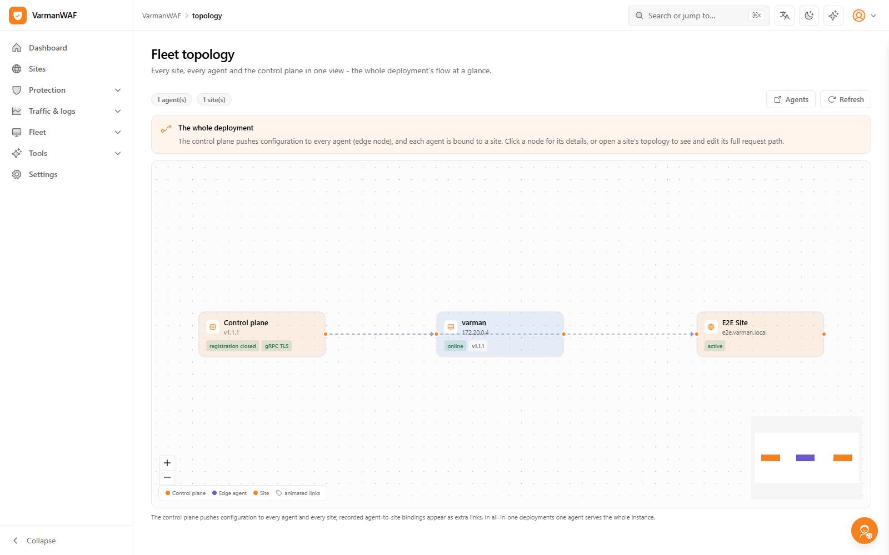
២៥.៣ ការប្រើប្រាស់ (Site topology)
- អូសដាក់វិញ (drag) — អូស node ណាមួយដើម្បីរៀបចំទិដ្ឋភាព។ ការរៀបចំត្រូវបានចងចាំតាមគេហទំព័រ (per site)។
- Auto layout — ត្រឡប់ទៅការរៀបចំស្វ័យប្រវត្តិវិញ។
- បន្ថែមធាតុថ្មី — អូសធាតុពីផ្ទាំង Add to the flow (Upstream, Origin pool, Route, Rate limit, IP rule, Cache rule) ទៅលើផ្ទាំង។ ទម្រង់បំពេញនឹងបើក — គ្មានអ្វីត្រូវបានបង្កើត រហូតដល់អ្នកចុច Save។
- កែសម្រួលភ្លាមៗ — ចុចលើ node ណាមួយ (ឧ. Web Protection) ដើម្បីកែនៅខាងស្តាំ ដោយមិនចាំបាច់ចាកចេញពីទំព័រ។
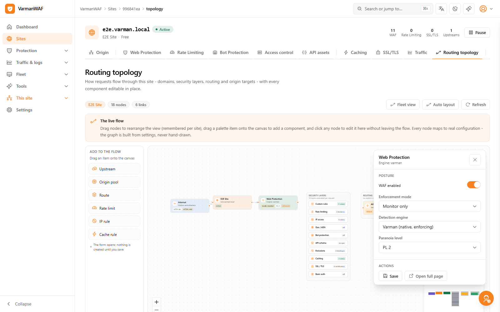
២៥.៣ អ្វីដែលអ្នកកែបានក្នុងទំព័រនេះ
| Node | ការកែសម្រួល |
|---|---|
| គេហទំព័រ | ឈ្មោះ, ដែនមេ, ដែនបន្ថែម |
| Web Protection | បើក/បិទ WAF, របៀប (block/monitor), engine (varman/legacy/shadow), paranoia level |
| ស្រទាប់សុវត្ថិភាព | Rate limit (បន្ថែម/លុប), IP rule (បន្ថែម/លុប), Cache rule (បន្ថែម/លុប), Basic auth (បន្ថែមគណនី), Bot, Geo — និងតំណទៅទំព័រពេញសម្រាប់ច្បាប់/API schema/SSL |
| ផ្លូវ (Routes) | បន្ថែម/កែ/លុប ផ្លូវ ជាមួយ match type និង origin pool |
| ក្រុម Origin | ឈ្មោះ, វិធីចែកបន្ទុក (round robin / hash) |
| គោលដៅ (Upstream) | អាសយដ្ឋាន, ទម្ងន់, TLS, ក្រុម |
ជំពូកទី ២៦ — ច្បាប់គ្រប់គ្រងដែលភ្ជាប់មកជាមួយ (Built-in managed rules)
២៦.១ តើច្បាប់ទាំងនេះជាអ្វី?
ម៉ាស៊ីន Varman មាន ច្បាប់គ្រប់គ្រង ១៤ ភ្ជាប់មកជាមួយ (លេខ VARMAN-1001 ដល់ VARMAN-1061)។ ក្នុងចំណោមនោះ ១៣ ដំណើរការនៅកម្រិត Normal ហើយ ១ (VARMAN-1061) បន្ថែមតែនៅកម្រិត Strict (ពេលបើក Advanced mode)។
ពួកវាសរសេរដោយភាសាកន្សោមដូចគ្នានឹងច្បាប់ផ្ទាល់ខ្លួនរបស់អ្នក — ដូច្នេះអ្នកអាចមើល និងលៃតម្រូវវាបានដូចច្បាប់ធម្មតា។ ពួកវាជា គំរូដើមបែប OWASP មិនមែនជាការគ្របដណ្តប់ពេញលេញទេ — នៅក្នុងប្រព័ន្ធពិត អ្នកនឹងបន្ថែម OWASP CRS (ជំពូក ២៧) និងច្បាប់ផ្ទាល់ខ្លួនបន្ថែមទៀត។
២៦.២ ពួកវាដំណើរការយ៉ាងដូចម្តេច?
ច្បាប់គ្រប់គ្រងដំណើរការនៅ ដំណាក់កាលទី ២ (បន្ទាប់ពីស្រទាប់ signature ស្កេនលំនាំ)។ មុនពេលច្បាប់មួយត្រូវបានវាយតម្លៃ ម៉ាស៊ីនពិនិត្យច្រកទ្វារទាំងនេះ៖
| ច្រកទ្វារ | អត្ថន័យ |
|---|---|
| បើក/បិទ | ច្បាប់ដែលត្រូវបានបិទ មិនដំណើរការទេ |
| Paranoia level របស់ច្បាប់ | ច្បាប់ដំណើរការតែពេល PL របស់ច្បាប់ ≤ PL របស់គេហទំព័រ (ឧ. គេហទំព័រ PL 2 → ច្បាប់ PL 1–2 ដំណើរការ; ច្បាប់ PL 3–4 មិនដំណើរការ) |
| Stacks (បច្ចេកវិទ្យា backend) | ច្បាប់ GENERIC ដំណើរការ ជានិច្ច; ច្បាប់តាមភាសា (ឧ. Log4Shell → Java) ដំណើរការពេល stack នោះបើក (លំនាំដើម៖ បើកទាំងអស់) |
| Monitor lists | ច្បាប់ដែលត្រូវបានដាក់ក្នុងបញ្ជីតាមដាន គ្រាន់តែកត់ត្រា មិនទប់ស្កាត់ |
| Target exclusions | ការលើកលែងតាមផ្នែកនៃសំណើ (ឧ. parameter ជាក់លាក់) — លើកលែងបានតែចំពោះច្បាប់ដែលអានតម្លៃផ្ទាល់ (មិនមែនច្បាប់ពិន្ទុ — សូមមើល ២៦.៧) |
២៦.៣ ពិន្ទុដែលច្បាប់ទាំងនេះប្រើ
- រាល់ការរកឃើញបន្ថែមពិន្ទុ = កម្រិតធ្ងន់ធ្ងរ (severity 1–5)។
- ការរកឃើញតាមគ្រួសារវាយប្រហារ បន្ថែម
ពិន្ទុ × 12ទៅ sub-score របស់គ្រួសារនោះ → ការរកឃើញ critical មួយ = ៦០ ពិន្ទុ ក្នុងcf.waf.score.sqli/xss/rce។ cf.waf.scoreគឺពិន្ទុសរុប; ច្បាប់ពិន្ទុអាន ពិន្ទុដែលទប់ស្កាត់ (មិនរាប់ការរកឃើញ monitor)។- កម្រិតទប់ស្កាត់សរុបរបស់ម៉ាស៊ីន = ៤០ (លំនាំដើម); ច្បាប់ពិន្ទុខាងក្រោមជាច្រកទ្វារបន្ថែមតាមគ្រួសារ។
- Normal → Strict (Advanced mode)៖ ច្រកទ្វារគ្រួសារ ៦០ → ៥០; ច្រកទ្វារសរុប ៨០ → ៧០; បន្ថែម
VARMAN-1061(RCE ≥ 40)។
២៦.៤ តារាងច្បាប់ទាំង ១៤
ក. ច្រកទ្វារពិន្ទុ (Anomaly gates)
| លេខ | ឈ្មោះ | សកម្មភាព | Sev | PL | លក្ខខណ្ឌ |
|---|---|---|---|---|---|
VARMAN-1002 | Block known SQL injection anomaly scores | Block | 5 | 1 | cf.waf.score.sqli ≥ 60 (Strict 50) |
VARMAN-1003 | Block known XSS anomaly scores | Block | 5 | 1 | cf.waf.score.xss ≥ 60 (Strict 50) |
VARMAN-1004 | Block requests with high aggregate WAF score | Block | 5 | 1 | cf.waf.score ≥ 80 (Strict 70) — ចាប់សំណើដែលមានសញ្ញាច្រើនប្រភេទបញ្ចូលគ្នា |
VARMAN-1061 | Block requests with a high RCE sub-score | Block | 5 | 1 | cf.waf.score.rce ≥ 40 — Strict តែប៉ុណ្ណោះ |
ខ. ការស្វែងរករកចន្លោះប្រហោង (Recon / probes)
| លេខ | ឈ្មោះ | សកម្មភាព | Sev | PL | លក្ខខណ្ឌ |
|---|---|---|---|---|---|
VARMAN-1020 | Block sensitive dotfile probes | Block | 5 | 1 | ផ្លូវ /.git, /.env, /.svn, /.aws, /.kube, /.ssh, /.docker |
VARMAN-1021 | Block common backup-file probes | Block | 4 | 2 | ផ្លូវបញ្ចប់ដោយ .bak, .backup, .old, .swp, .sql (មិនរាប់ .zip/.tar.gz ព្រោះជាការទាញយកធម្មតា) |
VARMAN-1040 | Block phpMyAdmin / wp-admin probes on non-PHP apps | Challenge | 3 | 2 | /phpmyadmin, /pma, /wp-admin, /wp-login.php, /xmlrpc.php, /administrator — ប្រឈមមុខ ព្រោះ CMS ពិតប្រើផ្លូវទាំងនេះដែរ |
គ. User-Agent
| លេខ | ឈ្មោះ | សកម្មភាព | Sev | PL | លក្ខខណ្ឌ |
|---|---|---|---|---|---|
VARMAN-1010 | Block common scanner user agents | Block | 4 | 2 | មានឈ្មោះ nikto, sqlmap, nmap, masscan, acunetix, nessus, openvas, wpscan, dirbuster, gobuster, zgrab |
VARMAN-1011 | Block empty user agents on non-HEAD requests | Challenge | 2 | 3 | User-Agent ទទេ លើសំណើមិនមែន HEAD — PL 3 ព្រោះ script ធម្មតាក៏អាចខ្វះវាដែរ |
ឃ. វិធីសាស្ត្រ (Methods)
| លេខ | ឈ្មោះ | សកម្មភាព | Sev | PL | លក្ខខណ្ឌ |
|---|---|---|---|---|---|
VARMAN-1030 | Block HTTP method TRACE / TRACK | Block | 3 | 1 | TRACE ឬ TRACK (cross-site tracing — គ្មានការប្រើប្រាស់សម័យថ្មី) |
VARMAN-1031 | Log unusual HTTP methods | Log | 1 | 2 | វិធីសាស្ត្រក្រៅពី GET/POST/PUT/PATCH/DELETE/HEAD/OPTIONS — កត់ត្រាតែប៉ុណ្ណោះ |
ង. ផ្លូវ និងសិទ្ធិ
| លេខ | ឈ្មោះ | សកម្មភាព | Sev | PL | លក្ខខណ្ឌ |
|---|---|---|---|---|---|
VARMAN-1001 | Block admin paths from non-trusted networks | Challenge | 3 | 1 | ផ្លូវចាប់ផ្តើម /admin និង IP ក្រៅបណ្តាញទុកចិត្ត (10/8, 172.16/12, 192.168/16, 127/8) — ការិយាល័យ/VPN របស់អ្នកមិនប៉ះពាល់ |
ច. Payload តាមបច្ចេកវិទ្យា
| លេខ | ឈ្មោះ | សកម្មភាព | Sev | PL | Stacks | លក្ខខណ្ឌ |
|---|---|---|---|---|---|---|
VARMAN-1050 | Block Log4Shell JNDI lookups | Block | 5 | 1 | Java | មាន ${jndi: (ក្នុង User-Agent) |
VARMAN-1051 | Block requests with very long URIs | Log | 3 | 3 | Generic | URI ≥ 4096 តួអក្សរ — កត់ត្រាតែប៉ុណ្ណោះ ព្រោះផ្លូវវែងអាចស្របច្បាប់ (ការរកឃើញពិតនៅតែគិតពិន្ទុតាម signature) |
២៦.៥ ការលៃតម្រូវ (តាមគេហទំព័រ ឬតាមគោលនយោបាយ)
- តាមដានច្បាប់មួយ — ដាក់លេខច្បាប់ក្នុង បញ្ជីតាមដាន (monitor managed rules)។
- តាមដានគ្រួសារ/stack —
monitor_categories(sqli/xss/rce) និងmonitor_stacks; ច្បាប់GENERICមិនត្រូវបាន downgrade ដោយ stack ទេ។ - បិទ ឬកែពិន្ទុ — តាម Rule exceptions (Policy tuning): disable / monitor only / score override។
- លើកលែងតាម target — តាម Exclusion packages (ឧ. លើកលែង parameter
commentចេញពីច្បាប់ XSS)។
២៦.៦ សកម្មភាពរបស់ច្បាប់ មិនដូចគ្នានឹងស្ថានភាពគេហទំព័រទេ
ច្បាប់មួយចង់ Block តែគេហទំព័រអាចកំពុងដំណើរការជា monitor — ពេលនោះការរកឃើញនឹងត្រូវកត់ត្រាដោយមិនទប់ស្កាត់។ ដូច្នេះត្រូវពិនិត្យទាំងពីរ៖ សកម្មភាពច្បាប់ (ក្នុងតារាងខាងលើ) និង ស្ថានភាពអនុវត្តជាក់ស្តែង (Effective posture)។
២៦.៧ ដែនកំណត់ដែលគួរដឹង
- ច្បាប់ទាំងនេះ មិនទូលំទូលាយទេ — ជាមូលដ្ឋានសម្រាប់ការចាប់ផ្តើម; CRS និងច្បាប់ផ្ទាល់ខ្លួនបន្ថែមភាពគ្របដណ្តប់។
- ច្បាប់ពិន្ទុ (
1002,1003,1004,1061) មិនអាចលើកលែងតាម targetបានទេ ព្រោះវាអានពិន្ទុពីដំណាក់កាលទី ១ — ត្រូវលៃតម្រូវដោយ disable/monitor ឬកែច្រកទ្វារ។ - ច្បាប់ដែលបង្ហាញក្នុងផ្ទាំង Rules គឺដូចគ្នាបេះបិទនឹងអ្វីដែលម៉ាស៊ីនចងក្រង (អានពី
GET /api/v1/managed-rules)។
ជំពូកទី ២៧ — OWASP CRS និង Paranoia Ceiling
២៧.១ CRS ជាអ្វី?
OWASP CRS (Core Rule Set) គឺជាបណ្ណាល័យច្បាប់ការពារដ៏ធំ និងល្បីល្បាញបំផុតសម្រាប់ម៉ាស៊ីន WAF បែប ModSecurity — សរសេរដោយសហគមន៍ OWASP។ វាបន្ថែមភាពគ្របដណ្តប់យ៉ាងទូលំទូលាយ (ការវាយប្រហារតាមពិធីការ, PHP/Java/Node injection, session fixation, SSRF ។ល។) លើសពីច្បាប់គ្រប់គ្រងភ្ជាប់មកជាមួយរបស់យើង។
VarmanWAF បាននាំចូល CRS 4.30.0 (ច្បាប់ ៦៩៣) ហើយអនុវត្តវាដោយ ម៉ាស៊ីន SecLang ផ្ទាល់ខ្លួន — គ្មាន ModSecurity ដំឡើងបន្ថែម។
២៧.២ ការនាំចូល (Import)
- ចូលទំព័រ CRS រួចចុច Import ruleset។
- ជ្រើសប្រភព៖ GitHub release (ជ្រើស tag ថ្មីៗពី
coreruleset/coreruleset), Archive URL ឬឯកសារផ្ទុកឡើង។ - ប្រព័ន្ធញែកឯកសារដោយ ម៉ាស៊ីនញែក SecLang ផ្ទាល់ខ្លួន។ ច្បាប់ដែលញែកបាន = compiled; ច្បាប់ដែលញែកមិនបាន នៅតែបង្ហាញជាមួយ កំហុសញែករបស់វា — គ្មានអ្វីត្រូវបានទម្លាក់ដោយស្ងាត់ទេ។
- បញ្ជី ruleset បង្ហាញចំនួន compiled និង unsupported — ហើយច្បាប់ទាំងអស់អាចរកមើលបាន (category / paranoia / phase / severity / keyword)។
២៧.៣ ច្បាប់ CRS ទៅដល់ Edge យ៉ាងដូចម្តេច?
- បង្កើត/កែ គោលនយោបាយ (Policies) ហើយបន្ថែមស្រទាប់ CRS ruleset (
crs_import)។ - ជ្រើស ruleset, Paranoia level ceiling និង (បើចង់) categories ដើម្បីដំណើរការតែប្រភេទជាក់លាក់។
- នៅពេលភ្ជាប់គោលនយោបាយទៅគេហទំព័រ ម៉ាស៊ីនចងក្រងច្បាប់ដែលជ្រើស ចូលជា virtual patches (SecLang) របស់គេហទំព័រ។
- កញ្ចប់លើកលែងប្រភេទ seclang ដំណើរការ បន្ទាប់ពី CRS — ដូច្នេះ
SecRuleUpdateTargetById/SecRuleRemoveByIdអាចលៃតម្រូវច្បាប់ CRS បាន (សូមមើលជំពូក ២២.៣–២២.៤)។
២៧.៤ Paranoia Level Ceiling ជាអ្វី?
ច្បាប់ CRS នីមួយៗមាន កម្រិត paranoia (PL1–PL4) ឬគ្មានកម្រិត (ដំណើរការជានិច្ច)។ Ceiling គឺជា កម្រិតខ្ពស់បំផុតដែលត្រូវបានអនុញ្ញាត៖
- ច្បាប់ដែលមាន PL ខ្ពស់ជាង ceiling → មិនត្រូវបានបញ្ជូនទៅ Edge ទេ (មិនដំណើរការ)។
- ច្បាប់ដែលគ្មានកម្រិត → រួមបញ្ចូលជានិច្ច។
- មិនកំណត់ ceiling → រួមបញ្ចូល គ្រប់ច្បាប់ដែលញែកបាន។
| កម្រិត | អត្ថន័យ | ការណែនាំ |
|---|---|---|
| PL 1 | មូលដ្ឋាន — ការរកឃើញដែលមានទំនុកចិត្តខ្ពស់, false positive ទាបបំផុត | ចាប់ផ្តើមទីនេះ |
| PL 2 | ពង្រឹងបន្ថែម — ការពារខ្លាំងជាង ប៉ុន្តែត្រូវការការលៃតម្រូវបន្តិច | កម្រិតផលិតកម្មដែលណែនាំ (បន្ទាប់ពីសាកល្បង) |
| PL 3 | តឹងរ៉ឹង — false positive ច្រើនឡើងគួរឱ្យកត់សម្គាល់ | សម្រាប់កម្មវិធីដែលគ្រប់គ្រងច្បាស់ |
| PL 4 | ប្រុងប្រយ័ត្នបំផុត — FP ច្រើន; ត្រូវការលើកលែងច្រើន | កម្រប្រើ — សម្រាប់តែបរិស្ថានពិសេស |
២៧.៥ រូបមន្តជាក់ស្តែង (Recipes)
# ១. ចាប់ផ្តើមប្រកបដោយសុវត្ថិភាព
Site posture: Paranoia level = 2, Advanced mode = បិទ, Mode = monitor
CRS layer: Paranoia level ceiling = 1
→ សង្កេតរយៈពេលខ្លី រួចពិនិត្យ Logs (why resolver)
# ២. ពង្រឹងបន្តិចម្តងៗ
CRS layer: Paranoia level ceiling = 2
→ បើឃើញ false positive: បន្ថែមកញ្ចប់លើកលែង (seclang):
SecRuleUpdateTargetById 942100 "!ARGS:comment"
# ៣. ដំណើរការតែប្រភេទជាក់លាក់
CRS layer: categories = [attack-sqli, attack-xss]
→ បញ្ចូលតែច្បាប់ក្នុងប្រភេទទាំងនោះ
# ៤. ត្រឡប់ក្រោយ
Policy history → ជ្រើសកំណែចាស់ → Restore (បង្កើត revision ថ្មី)២៧.៦ ដែនកំណត់ដែលគួរដឹង
- ច្បាប់ដែលញែកមិនបាន (unsupported) នៅតែ មើលឃើញជាមួយកំហុស ប៉ុន្តែ មិនអាចអនុវត្តបាន — ប្រព័ន្ធប្រាប់ត្រង់ៗ។
- CRS ដំណើរការជា virtual patches៖ root prefix និង ទាំងគេហទំព័រ (មិនតាម path នីមួយៗ)។
- ច្បាប់គ្រប់គ្រងដែលអានពិន្ទុ
cf.waf.score.*មិនអាចលើកលែងតាម target បាន (ដំណាក់កាលទី ១)។ - កម្រិតភាពស៊ីគ្នាត្រូវបានកត់ត្រានៅ
docs/compatibility.md។
ជំពូកទី ២៨ — ឧបសម្ព័ន្ធ
២០.១ ពាក្យបច្ចេកទេសសំខាន់ៗ
| ពាក្យ | អត្ថន័យ |
|---|---|
| WAF | ជញ្ជាំងភ្លើងកម្មវិធីវេប — ការពារ SQLi, XSS ។ល។ |
| Origin / Upstream | ម៉ាស៊ីនមេពិតដែលផ្ទុកគេហទំព័រ |
| Edge / Agent | កម្មវិធីនៅជិតអ្នកប្រើ ដែលត្រួតពិនិត្យ និងបញ្ជូនសំណើ |
| Control Plane | ផ្ទាំងបញ្ជា និង API មជ្ឈមណ្ឌល |
| Policy / Layer | គោលនយោបាយ / ស្រទាប់កំណត់ក្នុងគោលនយោបាយ |
| Exclusion | ការលើកលែងច្បាប់ចំពោះករណីជាក់លាក់ |
| OpenAPI | ឯកសារពិពណ៌នា API (spec) |
| ASN | លេខសម្គាល់បណ្តាញរបស់អ្នកផ្តល់សេវា |
| ACME | ស្តង់ដារចេញវិញ្ញាបនបត្រដោយស្វ័យប្រវត្តិ (Let's Encrypt) |
| mTLS | TLS ទៅវិញទៅមក — ភាគីទាំងពីរផ្ទៀងផ្ទាត់គ្នា |
២០.២ តារាងយោងរហ័ស
| ខ្ញុំចង់… | ទៅកាន់ |
|---|---|
| មើលស្ថានភាពទូទៅ | Dashboard |
| មើលលំហូរពិតរបស់គេហទំព័រ | Routing topology |
| បន្ថែមគេហទំព័រ | Sites → Add site |
| កែច្បាប់ / បន្ថែមច្បាប់ផ្ទាល់ខ្លួន | Site → Protection → Rules |
| លើកលែងការបាញ់ខុស | Site → Protection → Policy tuning → Rule exceptions / Exclusion packages |
| ទប់ស្កាត់ប្រទេស | Site → Access → Geo |
| មើលថាហេតុអ្វីត្រូវទប់ស្កាត់ | Logs → Security events → why resolver |
| ផ្ញើរបាយការណ៍ទៅថ្នាក់គ្រប់គ្រង | Reports |
| ទទួលការជូនដំណឹងតាម Telegram | Alerts → Channels → Telegram |
| កំណត់តំបន់ពេលវេលា | Settings → Display |
| បង្កើតកូនសោ API | Settings → API keys |
២០.៣ ឯកសារបន្ថែម
- docs/features.md — បញ្ជីមុខងារពេញលេញ (អង់គ្លេស)។
- docs/security-engine.md — ព័ត៌មានលម្អិតនៃម៉ាស៊ីនសុវត្ថិភាព។
- docs/deployment.md — ការដាក់ដំណើរការ និងប្រតិបត្តិការ។
- docs/benchmarks/v1.0.0.md — របាយការណ៍ល្បឿន (benchmark)។